Tema 3.A.25
La teoría neoclásica del mercado de trabajo. Análisis intertemporal de la oferta de trabajo. Teoría del capital humano. Función de ingresos de capital humano y evidencia empírica.
Oferta y demanda de trabajo, salario de reserva, Lucas-Rapping y elasticidad de Frisch, capital humano de Becker, ecuación de Mincer y brecha salarial.
Exclusivo Material exclusivo de victorgutierrezmarcos.es y la app Oposición TCEE · DCE. Puedes usarlo libremente para tu estudio personal. No se autoriza su incorporación a otras plataformas, aplicaciones o servicios. Condiciones de uso.
Introducción
Enganche:
«El tiempo es oro», dice el refrán. Cada uno de nosotros dispone de 24 horas al día y decide cuántas vende en el mercado de trabajo, a qué edad empieza a venderlas y cuántos años estudia antes de hacerlo.
Detrás está la pregunta de esta exposición: ¿cuánto vale una hora de nuestro tiempo? La teoría neoclásica responde que, en el margen, lo que se paga por ella: el salario. Pero ese precio cambia con la persona, con el momento y con lo que cada uno ha invertido en sí mismo. En 2023, Claudia Goldin recibió el Premio Nobel de Economía por explicar cómo les ha ido a las mujeres en el mercado laboral a lo largo de 2 siglos (Nobel Prize Outreach, 2023): cuánto y quién trabaja depende a la vez de los salarios, de la educación y de la familia.
Relevancia:
Microeconómica: el salario es la principal fuente de renta de la mayoría de los hogares, y las decisiones de trabajar y de formarse marcan la renta de toda una vida, los bienes a los que se tiene acceso e incluso con quién se relaciona uno.
Macroeconómica: el trabajo es el principal factor de producción; el mercado de trabajo determina la producción, la distribución de la renta y el paro, uno de los problemas sociales de más peso en España: la tasa de paro era del 10,18 % en el tercer trimestre de 2026 (Instituto Nacional de Estadística, 2026b, 2026c).
De política económica: la elasticidad de la oferta de trabajo decide cuánto cuestan los impuestos sobre el trabajo [ver tema 4.B.10]; la demanda, qué efecto tiene el salario mínimo [ver tema 4.A.16], y los rendimientos de la educación, cuánto conviene invertir en ella [ver tema 4.A.2].
Contextualización. Desde un punto de vista conceptual:
La economía laboral estudia el mercado de trabajo, en el que se intercambian servicios de trabajo por salarios: los trabajadores ofrecen su tiempo y las empresas lo demandan para producir.
Puede abordarse desde la micro (las decisiones de trabajadores y empresas) o desde la macro (el paro, los salarios agregados, el ciclo). Esta exposición se centra en los fundamentos microeconómicos y lo hace desde la perspectiva neoclásica: mercados competitivos y salarios flexibles.
De esos supuestos se deriva un equilibrio en el que el salario real iguala la productividad marginal del trabajo y no hay paro involuntario: quien no trabaja es porque el salario de mercado no supera su salario de reserva. Los datos de paro muestran que el mercado no se vacía; aun así, el modelo es la referencia de eficiencia y la base sobre la que se levantan los demás supuestos.
Desde un punto de vista histórico:
Los neoclásicos aplican al trabajo la teoría de la productividad marginal.
Marshall (1890) trata el mercado de trabajo como cualquier otro, en equilibrio parcial, aunque no lo estudia de forma sistemática; el paro no era para él la preocupación central.
Hicks (1932), en The Theory of Wages, formaliza la demanda de trabajo con la productividad marginal y reconoce que la teoría no explica bien el paro, en el que ve el papel de los sindicatos y de las fricciones. Su obra queda eclipsada por la Teoría general de Keynes (1936), que pone en el centro el paro involuntario [ver tema 3.A.4].
Desde los años 60, la teoría vuelve a la oferta con 2 líneas que son el objeto de esta exposición:
la decisión de formarse, la teoría del capital humano de Mincer (1958), Schultz (1961) y Gary Becker, con su artículo de 1962 y su libro de 1964 (Becker, 1962, 1964);
la decisión de cuándo trabajar: 33 años después de la Teoría general, Lucas y Rapping (1969) microfundamentan la oferta de trabajo como Friedman y Modigliani habían hecho con el consumo y Eisner y Jorgenson con la inversión. Es la base de la nueva macroeconomía clásica y, después, de los ciclos reales de Kydland y Prescott (1982).
En las últimas décadas, la revolución de la credibilidad ha puesto a prueba estas teorías con experimentos naturales: el Premio Nobel de 2021 fue para Card, Angrist e Imbens (Nobel Prize Outreach, 2021), y el de 2023, para Goldin.
Problemática (preguntas clave):
¿Cómo deciden los hogares cuánto trabajar y las empresas a cuántos contratar, y qué salario sale de ahí?
Si el salario sube, ¿se trabaja más? ¿Depende de que la subida sea transitoria o permanente?
¿Por qué no todos los trabajadores cobran lo mismo? ¿Es rentable estudiar, y cómo se mide?
Estructura: la exposición se divide en 3 bloques.
I. Teoría neoclásica de la oferta y la demanda de trabajo (I): el modelo estático. La oferta, desde la elección entre consumo y ocio; la demanda, desde la maximización del beneficio, y el equilibrio, con su valoración y el poder de monopsonio.
II. Análisis intertemporal de la oferta de trabajo (II): la oferta se lleva al tiempo con Lucas y Rapping (1969).
III. Teoría del capital humano y función de ingresos (III): se levanta la homogeneidad del trabajo con la teoría de Becker y la función de ingresos de Mincer, la herramienta de la evidencia empírica.
El orden va de lo más sencillo a lo más rico: primero cuánto se trabaja hoy, luego cuándo se trabaja y, por último, cuánto se invierte en ser más productivo. La evidencia empírica de cada modelo se presenta al final de cada uno.
3.A.25. Mercado de trabajo neoclásico, oferta intertemporal y capital humano
Introducción
I. Teoría neoclásica de la oferta y la demanda de trabajo
1. Oferta: \(\mathrm{RMS}_{OC}=w\), salario de reserva \(w^R\), 3 efectos
2. Demanda: \(\mathrm{VPMg}_L=w_L\) \(\Leftrightarrow\) \(F_L=w\)
3. Equilibrio: sin paro involuntario (salvo salario mínimo)
4. Valoración: monopsonio y paro
II. Análisis intertemporal de la oferta: Lucas y Rapping (1969)
1. Idea . Modelo: salario relativo intertemporal . Extensiones: Frisch, ciclo vital, ciclos reales
4. Evidencia . Valoración
III. Teoría del capital humano y función de ingresos
1. Usos del capital humano . Becker (1964) . Función de ingresos: Mincer
Conclusión
Reparto del cante: introducción, 2′30″; I, 10′ (I.1, 5′; I.2, 1′30″; I.3, 1′30″; I.4, 2′); II, 6′30″ (II.1, 0′45″; II.2, 3′; II.3, 1′15″; II.4, 0′45″; II.5, 0′45″); III, 10′ (III.1, 1′30″; III.2, 4′; III.3, 4′30″), y conclusión, 1′. La pizarra se organiza en 3 zonas fijas: a la izquierda, los 8 supuestos del modelo neoclásico (número y una palabra), que se escriben al empezar I y se quedan; en cada bloque se marca el que se levanta. En el centro, los gráficos, que se borran al acabar cada bloque. A la derecha, las funciones clave (la tangencia y el salario de reserva, la condición de la demanda, la condición de Lucas y Rapping y la ecuación de Mincer) y los refranes pegatina. La demanda a largo plazo y la agregada, la ecuación de Slutsky con dotación, el modelo de Lucas y Rapping con horizonte infinito, el caso general con poder de mercado y el modelo de Ben-Porath están en los anexos, para las preguntas del tribunal.
I. Teoría neoclásica de la oferta y la demanda de trabajo
En el cante: la tabla de supuestos en la pizarra, en versión corta (número y una palabra), al empezar el bloque. La oferta (5′): problema, tangencia y salario de reserva como funciones clave, los 3 efectos de una subida del salario sobre un solo gráfico por capas, la curva individual que se vuelve hacia atrás y los 2 márgenes, las extensiones en una línea cada una, la evidencia (elasticidades y Goldin) y la valoración. La demanda (1′30″): solo el corto plazo, con su función clave; el largo plazo y la agregación, en una frase cada uno. El equilibrio (1′30″): el gráfico por capas con el salario mínimo. La valoración (2′): el monopsonio con su fórmula y Card y Krueger, y el paro que el modelo no explica. Las condiciones de Kuhn-Tucker, la caja de la agregación, la de Marshall y los gráficos del monopsonio son de profundización.
Conclusión anticipada: con competencia perfecta y salarios flexibles, el mercado de trabajo se vacía; el salario real iguala a la vez la valoración marginal del ocio de cada trabajador y la productividad marginal del trabajo, y no hay paro involuntario salvo que un salario mínimo lo impida.
La teoría neoclásica analiza el trabajo como cualquier otro mercado: la oferta sale de la elección de los hogares entre consumo y ocio; la demanda, de la maximización del beneficio de las empresas, y el salario vacía el mercado. Parte de los supuestos de la competencia perfecta [ver tema 3.A.16], aplicados al trabajo, y de 3 propios del mercado de trabajo (tabla 1). Cada bloque posterior levanta alguno, y eso ordena el resto de la exposición y de los temas del mercado de trabajo.
| N.º | Supuesto | En el mercado de trabajo | Se levanta en |
|---|---|---|---|
| 1 | Agentes racionales | los hogares maximizan su utilidad (consumo y ocio) y las empresas, su beneficio | — |
| 2 | Información perfecta y simétrica | el trabajador conoce los salarios que se pagan y la empresa, la productividad del trabajador | señalización (III.1); búsqueda [ver tema 3.A.26]; salarios de eficiencia [ver tema 3.A.27] |
| 3 | Producto homogéneo (sin sustitutivos cercanos) | trabajo homogéneo: todas las horas de todos los trabajadores son iguales | capital humano (III) |
| 4 | Mercado atomizado: muchos compradores y vendedores (precio-aceptantes) | muchas empresas y muchos trabajadores, y todos toman el salario como dado | monopsonio (I.4); sindicatos [ver tema 3.A.27] |
| 5 | Libre entrada y salida (a largo plazo) | libre participación: cada uno decide si trabaja o no (margen extensivo) | — |
| 6 | Salarios y precios flexibles | el salario se ajusta hasta vaciar el mercado | salario mínimo (I.3); rigideces [ver tema 3.A.27] [ver tema 3.A.28] |
| 7 | Movilidad perfecta, sin costes de ajuste | los trabajadores cambian de empleo y las empresas de plantilla sin coste | costes de ajuste y fricciones [ver tema 3.A.26]; capital humano específico (III.2) e insiders [ver tema 3.A.27] |
| 8 | Sin externalidades ni bienes públicos | el salario recoge todo el valor social del trabajo | externalidades del capital humano [ver tema 3.A.44] |
Fuente: elaboración propia; las filas 1-5 son la lista común de las estructuras de mercado del [ver tema 3.A.16].
I.1. Oferta de trabajo
a) Idea
Para tener un empleo remunerado hay que haberlo decidido antes: ese es el punto de partida de la teoría de la oferta de trabajo. Cada persona reparte un tiempo limitado entre el trabajo, que le da renta para consumir, y el ocio. La oferta de trabajo es, por tanto, una demanda de ocio vista del revés, y se estudia con las herramientas de la teoría del consumidor [ver tema 3.A.8].
El modelo básico de elección entre consumo y ocio enseña 3 cosas:
quién participa en el mercado de trabajo: el salario de reserva;
cuántas horas trabaja quien participa: la tangencia;
por qué la oferta no es necesariamente creciente en el salario: crece cuando el salario es bajo y puede volverse hacia atrás cuando es alto, por los efectos renta.
b) Modelo
i) Supuestos
Preferencias: una función de utilidad \(U(C,O)\) sobre el consumo \(C\) y el ocio \(O\), los 2 bienes (se desea más de cada uno). Cumplen los axiomas que garantizan que la función es de buen comportamiento (completitud, reflexividad, transitividad, continuidad, no saciedad local, convexidad estricta y diferenciabilidad) [ver tema 3.A.8]. Así, las curvas de indiferencia:
indican un nivel de utilidad mayor cuanto más lejos quedan del origen;
no se cortan, porque el punto de corte tendría 2 niveles de utilidad, algo que excluye la transitividad;
tienen pendiente negativa: su pendiente en valor absoluto es la relación marginal de sustitución entre ocio y consumo, \(\mathrm{RMS}_{OC}=U_O/U_C\), el consumo al que se está dispuesto a renunciar a cambio de una hora más de ocio sin cambiar de utilidad;
son convexas: la convexidad estricta hace la función cuasicóncava, y la \(\mathrm{RMS}_{OC}\) decrece con el ocio (cuanto más ocio se tiene, menos consumo se sacrifica por una hora más).
Tiempo: una dotación de tiempo \(O_0\) que se reparte entre ocio y trabajo, de modo que las horas trabajadas son \(L=O_0-O\).1
Rentas: un salario real \(w\) por hora (el precio del consumo se normaliza a 1, así que \(w\) está en unidades de consumo) y una renta no laboral \(\overline{W}\geq 0\), exógena (rentas del ahorro, transferencias).
Restricción presupuestaria: el consumo no supera la renta, \(C\leq wL+\overline{W}\). Escrita con el ocio en el lado del gasto, \(C+w\,O\leq w\,O_0+\overline{W}\). El lado derecho es la renta completa: lo que se tendría si se trabajara todo el tiempo. El salario aparece a los 2 lados: hace de precio del ocio y también da valor a la dotación de tiempo. De ahí sale un efecto que no existe en la teoría del consumidor con renta fija, el efecto renta dotación.
ii) Desarrollo
Problema del individuo: \[\begin{array}{rl}\displaystyle \max_{C,O} & \displaystyle U(C,O) \\ \text{s.a.} & C+w\,O\leq w\,O_0+\overline{W} \\ & C\geq 0,\ 0\leq O\leq O_0\end{array}\tag{1}\] Es un problema con restricciones de desigualdad, que se resuelve con las condiciones de Kuhn-Tucker y la lagrangiana \(\mathcal{L}=U(C,O)+\lambda\big[w\,O_0+\overline{W}-C-w\,O\big]\) (las condiciones completas, en el anexo A). El multiplicador \(\lambda>0\) es la utilidad marginal de la renta: lo que sube la utilidad con un euro más de renta no laboral.
Solución interior (\(C>0\), \(0<O<O_0\)): la valoración subjetiva de la última hora de ocio iguala su coste de oportunidad, el salario,
\[\mathrm{RMS}_{OC}=\frac{U_O(C^*,O^*)}{U_C(C^*,O^*)}=w,\qquad C^*+w\,O^*=w\,O_0+\overline{W}\tag{2}\]
Interpretación gráfica (gráfico 1): en el plano \((O,C)\), la recta de balance arranca en el punto de dotación \(A=(O_0,\overline{W})\), con un tramo vertical de altura \(\overline{W}\) (la renta no laboral se cobra aunque no se trabaje), y tiene pendiente \(-w\); el óptimo \(E\) es la tangencia con la curva de indiferencia más alta.
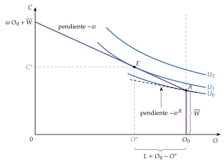
Fuente: elaboración propia a partir de Cahuc, Carcillo y Zylberberg (2014, cap. 1).
Solución de esquina y salario de reserva. Como la \(\mathrm{RMS}_{OC}\) decrece hacia la derecha a lo largo de una curva de indiferencia, el individuo trabaja si y solo si, en el punto de dotación, valora el ocio en menos de lo que paga el mercado. El salario de reserva es \[w^R=\frac{U_O(\overline{W},O_0)}{U_C(\overline{W},O_0)}\tag{3}\] la pendiente de la curva de indiferencia que pasa por \(A\): si \(w\leq w^R\), \(L=0\) (solución de esquina, \(O^*=O_0\)); si \(w>w^R\), \(L>0\). Depende de las preferencias, de \(O_0\) y de \(\overline{W}\). Con la misma dotación de tiempo y los mismos gustos, solo la renta no laboral lo mueve: si el ocio es normal, \(w^R\) crece con \(\overline{W}\), y la renta no laboral desincentiva la participación.2
Resultado: la demanda de ocio \(O(w,\overline{W})\) y la oferta de trabajo marshalliana (no compensada) \(L(w,\overline{W})=O_0-O(w,\overline{W})\).
Estática comparativa: renta no laboral (gráfico 2). Un aumento de \(\overline{W}\) desplaza la recta de balance en paralelo hacia arriba, sin cambiar su pendiente: solo hay efecto renta. Si el ocio es normal, el individuo consume más ocio y trabaja menos, \(\partial L/\partial\overline{W}<0\): el nuevo óptimo \(E'\) queda a la derecha de \(E\).
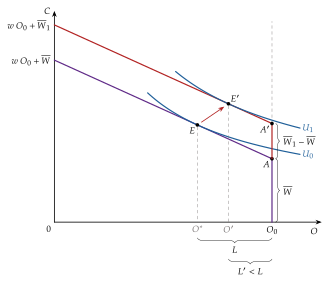
Fuente: elaboración propia a partir de Cahuc, Carcillo y Zylberberg (2014, cap. 1).
Estática comparativa: salario (gráfico 3). Un aumento del salario de \(w\) a \(w_1\) hace girar la recta de balance sobre el punto de dotación \(A\): el ocio se encarece, pero el individuo, que vende tiempo, es más rico. La respuesta se descompone en 3 efectos:
Efecto sustitución (\(E\to E'\)): con la utilidad inicial y el nuevo salario, el ocio, más caro, se sustituye por consumo. Siempre reduce el ocio y aumenta las horas. Es el cambio de la oferta compensada (hicksiana), \(O_0-h_O(w,\overline{U})\).3
Efecto renta ordinario o indirecto (\(E'\to E''\)): el de la teoría del consumidor con renta fija, el que habría si la renta completa no cambiara al subir \(w\). Como el ocio se ha encarecido, el poder adquisitivo de esa renta baja; si el ocio es normal, se consume menos ocio y refuerza al efecto sustitución. En el gráfico, es el paso a la recta de pendiente \(-w_1\) con la misma renta completa \(w\,O_0+\overline{W}\), que gira sobre su corte con el eje \(C\) y equivale a una renta no laboral compensada \(\overline{W}^c=\overline{W}-(w_1-w)\,O_0\) (punto \(A_1\)).
Efecto renta dotación o directo (\(E''\to E_1\)): la subida del salario revaloriza la dotación de tiempo, y la renta completa pasa de \(w\,O_0+\overline{W}\) a \(w_1O_0+\overline{W}\). Si el ocio es normal, se consume más ocio y se trabaja menos: va en contra de los otros 2.
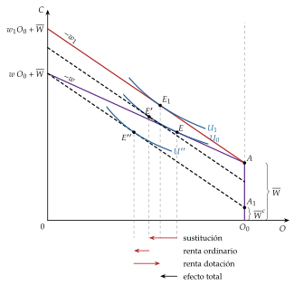
Fuente: elaboración propia a partir de Cahuc, Carcillo y Zylberberg (2014, cap. 1, fig. 1.12).
Los 2 efectos renta juntos forman el efecto renta global, que es proporcional a las horas trabajadas (la parte de la dotación que se vende): el individuo se enriquece con la subida en proporción a lo que trabaja. Es la ecuación de Slutsky con renta-dotación (13), que se deriva en el anexo A: \[\frac{\partial L(w,\overline{W})}{\partial w}=\underbrace{-\frac{\partial h_O(w,\overline{U})}{\partial w}}_{\text{sustitución }(+)}+\underbrace{L\,\frac{\partial L(w,\overline{W})}{\partial\overline{W}}}_{\text{renta global }(-\text{ si el ocio es normal})}\]
Conclusión: el efecto de un aumento del salario sobre las horas es ambiguo. En el gráfico, \(E_1\) puede quedar a la izquierda o a la derecha de \(E\), según el efecto renta dotación compense o no a los otros 2.4
iii) Implicaciones
Oferta de trabajo individual (gráfico 4), que se obtiene variando el salario:
por debajo del salario de reserva, \(L=0\);
por encima, con salarios moderados y pocas horas, el efecto renta global es pequeño (es proporcional a \(L\)) y domina el efecto sustitución: la oferta es creciente;
con salarios altos y muchas horas, el efecto renta pesa cada vez más y puede dominar: la oferta se vuelve hacia atrás. Ya Robbins (1930) mostró que la respuesta es teóricamente ambigua: depende de cuánto valore el trabajador una renta adicional frente al esfuerzo de ganarla.
En el extremo contrario, algunos autores sostienen que, con salarios cercanos a la subsistencia, también domina el efecto renta y la oferta tiene un primer tramo de pendiente negativa: si el salario baja, hay que trabajar más horas para llegar al mínimo vital, y la curva toma forma de S invertida (Sharif, 2000; Dessing, 2002).5
La forma de la oferta individual es, por tanto, una cuestión empírica (I.1).
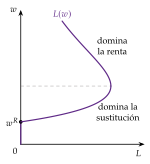
Fuente: elaboración propia a partir de Cahuc, Carcillo y Zylberberg (2014, cap. 1).
Oferta de trabajo agregada. Al sumar las ofertas individuales hay que tener cuidado con 2 cosas:
los efectos renta: la oferta agregada solo se comporta como la de un individuo representativo con condiciones muy restrictivas sobre las preferencias (Gorman, 1953; Kirman, 1992);
el salario influye en 2 decisiones distintas: cuántas horas trabaja quien ya trabaja, el margen intensivo, y cuántas personas trabajan, el margen extensivo. La respuesta de la oferta agregada suma las 2.
Agregación de la oferta de trabajo: margen intensivo y margen extensivo
Supongamos individuos que solo se diferencian en su renta no laboral, \(\overline{W}\in[0,+\infty)\), distribuida según la función de distribución \(F(\overline{W})\), con densidad \(f(\overline{W})\), y una población normalizada a 1. Si el ocio es normal, \(L(w,\overline{W})\) decrece con \(\overline{W}\), y para cada salario hay una renta no laboral de reserva \(\overline{W}^R(w)\) tal que \(L\big(w,\overline{W}^R(w)\big)=0\): trabajan quienes tienen \(\overline{W}<\overline{W}^R(w)\), cuyo salario de reserva es menor que \(w\).
La oferta agregada y su derivada (regla de Leibniz) son: \[\begin{gathered} L^S(w)=\int_{0}^{\overline{W}^R(w)}L(w,\overline{W})\,dF(\overline{W})\\ \frac{dL^S(w)}{dw}=\underbrace{\int_{0}^{\overline{W}^R(w)}\frac{\partial L(w,\overline{W})}{\partial w}\,dF(\overline{W})}_{\text{margen intensivo}}+\underbrace{L\big(w,\overline{W}^R\big)\,f\big(\overline{W}^R\big)\,\frac{d\overline{W}^R}{dw}}_{\text{margen extensivo}} \end{gathered}\]
El margen intensivo depende de los efectos sustitución y renta, y puede ser positivo o negativo.
Si las horas se eligen libremente, el margen extensivo es nulo, porque quien está en el umbral ofrece 0 horas: una subida pequeña del salario incorpora a gente que trabaja muy poco.
Con indivisibilidades (jornadas fijas por razones técnicas o institucionales: o se trabajan al menos \(L_{\min}\) horas o ninguna), quien entra lo hace con \(L_{\min}>0\), y el margen extensivo pasa a ser positivo: \(d\overline{W}^R/dw\) es la inversa de \(\partial w^R/\partial\overline{W}\), positiva si el ocio es normal (Cahuc, Carcillo y Zylberberg, 2014, cap. 1).
En conclusión, con efectos sustitución dominantes o con un margen extensivo importante, la oferta agregada es creciente. Cuánto lo es, su elasticidad, es una de las cifras más buscadas de la economía empírica, porque decide, por ejemplo, el coste de los impuestos sobre el trabajo.
c) Extensiones
El modelo básico deja fuera muchas cosas que influyen en la oferta de trabajo. Dos extensiones lo enriquecen sin cambiar su lógica:
Producción doméstica (Becker, 1965; Gronau, 1977). La alternativa al trabajo remunerado no es solo el ocio: las tareas del hogar producen bienes que sustituyen a los que se compran (se puede cocinar en casa o ir a un restaurante). Con \(L_{\mathrm{dom}}\) horas de trabajo doméstico que producen \(f(L_{\mathrm{dom}})\) unidades de consumo, con \(f'>0\) y \(f''<0\), el consumo es \(C=C_{\mathrm{mer}}+f(L_{\mathrm{dom}})\): \[\begin{array}{rl}\displaystyle \max_{C_{\mathrm{mer}},O,L_{\mathrm{dom}}} & \displaystyle U\big(C_{\mathrm{mer}}+f(L_{\mathrm{dom}}),\,O\big) \\ \text{s.a.} & C_{\mathrm{mer}}+w\,O\leq w\,(O_0-L_{\mathrm{dom}})+\overline{W}\end{array}\] Si se trabaja en el mercado, \(f'(L_{\mathrm{dom}}^*)=w\) y \(U_O/U_C=w\): se produce en casa hasta que la última hora rinde lo que paga el mercado (si rindiera más o menos, convendría pasar horas de un lado al otro). Quien es más productivo en casa o tiene un salario bajo trabaja menos fuera; abaratar la producción doméstica (electrodomésticos, guarderías) libera tiempo para el mercado.
Decisiones familiares. Las decisiones de los miembros de un hogar están conectadas: si cae el salario de uno, otro puede entrar en el mercado (efecto del trabajador añadido), algo que los datos confirman, aunque con efectos limitados.6 Hay 2 enfoques:
el modelo unitario trata al hogar como un solo decisor, con una utilidad común \(U(C,O_1,O_2)\) y la renta completa del hogar, \((w_1+w_2)O_0+\overline{W}_1+\overline{W}_2\): no importa quién recibe cada renta; \[\begin{array}{rl}\displaystyle \max_{C,O_1,O_2} & \displaystyle U(C,O_1,O_2) \\ \text{s.a.} & C+w_1O_1+w_2O_2\leq(w_1+w_2)O_0+\overline{W}_1+\overline{W}_2\end{array}\]
el modelo colectivo de Chiappori (1992): los datos rechazan que no importe quién cobra (las transferencias pagadas a uno u otro miembro cambian el gasto del hogar), y el hogar se modeliza como una negociación que alcanza asignaciones eficientes en el sentido de Pareto, \[\begin{array}{rl}\displaystyle \max_{C_1,C_2,O_1,O_2} & \displaystyle U_1(C_1,O_1) \\ \text{s.a.} & U_2(C_2,O_2)\geq\overline{U}_2 \\ & C_1+C_2+w_1O_1+w_2O_2\leq(w_1+w_2)O_0+\overline{W}_1+\overline{W}_2\end{array}\] donde \(\overline{U}_2\) refleja el poder de negociación del segundo miembro, que depende de sus opciones fuera del hogar.
d) Evidencia empírica
Tres elasticidades. La marshalliana \(\varepsilon_{L,w}\) (no compensada), la hicksiana \(\varepsilon^h_{L,w}\) (compensada: un cambio del salario con la utilidad constante) y la de Frisch \(\varepsilon^F_{L,w}\) (con la utilidad marginal de la riqueza constante, la que mide la respuesta a cambios transitorios: bloque II). Si el ocio es normal, \(\varepsilon^F_{L,w}\geq\varepsilon^h_{L,w}\geq\varepsilon_{L,w}\) (Keane, 2011).
Varones en edad central: sus horas apenas responden al salario; las elasticidades son pequeñas (la media de las hicksianas estimadas ronda 0,3) y las marshallianas, menores aún por el efecto renta (Blundell y MaCurdy, 1999; Keane, 2011).
Mujeres casadas y trabajadores de rentas bajas: responden bastante más, sobre todo en la decisión de participar (Keane, 2011).
Los 2 márgenes: las estimaciones cuasiexperimentales dan elasticidades hicksianas de 0,30 en el margen intensivo y 0,26 en el extensivo (Chetty et al., 2011). En media pesan parecido; el margen extensivo domina en algunos grupos, como las mujeres casadas.
La U de Goldin (Nobel 2023). La participación de las mujeres casadas dibuja una U a lo largo del desarrollo económico, entre países y en la historia de Estados Unidos (Goldin, 1995):
cae con la industrialización, cuando el trabajo sale del hogar y de la granja hacia la fábrica: dominan el efecto renta de los ingresos del marido y el estigma social del trabajo fabril de las mujeres casadas;
sube con la educación y los servicios, cuando aparecen empleos de oficina compatibles con la familia: domina el efecto sustitución;
y se acelera desde los años 70 con la píldora anticonceptiva, que permite retrasar el matrimonio y planificar una carrera profesional (Goldin y Katz, 2002).
Es el margen extensivo, la producción doméstica y la familia del modelo, vistos en la historia.
e) Valoración
El modelo explica bien la participación (el salario de reserva) y por qué la respuesta de las horas al salario es pequeña: los efectos renta y sustitución se compensan. Con el mismo gráfico se analiza cómo afectan los impuestos a las horas y a la participación [ver tema 4.B.10].
Es estático y supone que cada uno elige sus horas; con contratos de jornada fija, el ajuste se hace sobre todo en el margen extensivo.
Deja fuera el tiempo: si el salario sube solo hoy, ¿se trabaja más hoy y menos mañana? Es la pregunta del análisis intertemporal (II). Antes, completamos el mercado con la demanda.
I.2. Demanda de trabajo
a) Idea
Una vez estudiada la oferta, pasamos a la otra mitad del mercado: el empleo no depende solo de los trabajadores, sino también de los planes de las empresas que los contratan.
La de trabajo es una demanda derivada: se quiere trabajo para producir bienes (Hicks, 1932). Es la demanda de un factor de la teoría de la empresa, \(z_L(p,\vec{w})\), que da el lema de Hotelling [ver tema 3.A.12]: la empresa, vista como una caja negra que combina factores, contrata mientras el último trabajador aporte más de lo que cuesta.
b) Modelo
i) Supuestos
Empresa precio-aceptante en el bien (precio \(p\)) y en los factores (salario nominal \(w_L\) y coste de uso del capital \(w_K\)), que maximiza su beneficio \(B\). El caso con poder de mercado en el bien o en el trabajo, en I.4 y en el anexo D.
Función de producción \(q=F(L,K)\) continua, 2 veces diferenciable, con productividades marginales positivas y decrecientes.
Corto plazo: el capital está fijo en \(\overline{K}\) (instalarlo y ponerlo a punto lleva tiempo); solo el trabajo es variable.
ii) Desarrollo
Problema a corto plazo, sin restricciones (la tecnología va dentro del objetivo): \[\max_{L}\ B(L)=p\,F(L,\overline{K})-w_L\,L-w_K\,\overline{K}\]
Condición de primer orden (solución interior): la empresa contrata hasta que el valor del producto marginal del trabajo, lo que aporta a los ingresos el último trabajador, iguala el salario nominal, es decir, hasta que la productividad marginal iguala el salario real,
\[\mathrm{VPMg}_L\equiv p\cdot F_L(L,\overline{K})=w_L\ \Longleftrightarrow\ F_L(L,\overline{K})=\frac{w_L}{p}\equiv w\tag{4}\]
Condición de segundo orden: \(p\,F_{LL}<0\), que se cumple con productividad marginal decreciente. Con un solo factor variable no hace falta ninguna condición sobre los rendimientos a escala.
Interpretación gráfica (gráfico 5): con \(F_{LL}<0\), la demanda de trabajo a corto plazo, \(L^D(w)\), es el tramo decreciente de la curva del \(\mathrm{VPMg}_L\) (en términos reales, de la productividad marginal): si sube el salario real, se contrata menos.
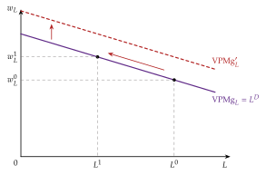
Fuente: elaboración propia a partir de Cahuc, Carcillo y Zylberberg (2014, cap. 3).
iii) Implicaciones
La demanda de trabajo depende negativamente del salario real y positivamente de la productividad del trabajo (el capital instalado y la tecnología) y del precio del bien, que desplazan la curva. Como en la teoría de la producción no hay efectos renta, la demanda de trabajo nunca crece con el salario: no hay factores Giffen [ver tema 3.A.12].
A largo plazo es más elástica: con el capital variable, la empresa sustituye trabajo por capital y cambia la escala, así que responde más a un mismo cambio del salario (principio de Le Chatelier, de Samuelson).
La demanda de mercado es menos elástica que la suma de las individuales: si baja el salario, todas las empresas contratan y producen más, y el precio del bien baja; hay que sumar las cuasidemandas, que tienen en cuenta esa caída del precio.
El desarrollo del largo plazo, la agregación y las reglas de Marshall y Hicks sobre la elasticidad de la demanda derivada están en el anexo B.
c) Evidencia empírica
Según la revisión de Hamermesh (1993), la elasticidad de la demanda de trabajo, con la producción constante, se mueve entre 0,15 y 0,75 en valor absoluto, con un valor central de 0,3. Es mayor para los trabajadores poco cualificados, más fáciles de sustituir por capital.7
Inmigración (Nobel 2021). Card (1990) usa como experimento natural el éxodo del Mariel (1980), que llevó a Estados Unidos a unos 125.000 cubanos y aumentó en torno a un 7 % la población activa de Miami. Comparando Miami con ciudades parecidas, no encuentra efectos apreciables sobre los salarios ni el paro de los trabajadores poco cualificados: o la demanda se desplazó a la vez, o es muy elástica. Borjas (2017), con otra muestra, sí encuentra caídas para los varones sin estudios secundarios: el debate sigue abierto.
I.3. Equilibrio
Con la oferta y la demanda ya construidas, el equilibrio del mercado de trabajo es el salario real \(w^c\) y el empleo \(L^c\) en que se cortan (gráfico 6): \(L^S(w^c)=L^D(w^c)\). En él, \[\frac{U_O}{U_C}=w^c=F_L(L^c,\overline{K})\] la valoración marginal del ocio de cada trabajador que participa iguala la productividad marginal del trabajo.
Propiedades positivas:
Existencia: con oferta y demanda continuas, si a un salario muy bajo se demanda más trabajo del que se ofrece y a uno muy alto, menos, hay al menos un salario que vacía el mercado.
Unicidad y estabilidad: no las garantiza la competencia [ver tema 3.A.21]. Si la oferta se vuelve hacia atrás (gráfico 4), puede cortar a la demanda más de una vez. Un equilibrio es estable en el sentido de Walras si en él la demanda corta a la oferta desde arriba, es decir, si a un salario algo mayor sobra trabajo y el salario baja.
El salario flexible es el mecanismo que vacía el mercado: no hay paro involuntario.8 Puede haber paro voluntario: quien tiene un salario de reserva mayor que el de mercado no trabaja porque no quiere.
Propiedad normativa: el equilibrio competitivo es eficiente en el sentido de Pareto (primer teorema fundamental de la economía del bienestar, 1TFEB) [ver tema 3.A.22]. En equilibrio parcial, maximiza el excedente conjunto de trabajadores y empresas: ninguna hora más de trabajo vale para la empresa más de lo que cuesta en ocio al trabajador.
Estática comparativa: una mejora de la productividad desplaza la demanda hacia la derecha y sube el salario y, si la oferta es creciente, el empleo. Marshall distingue un equilibrio temporal y otro normal (caja de abajo).
Salario mínimo. Si se fija \(\underline{w}>w^c\), el empleo lo decide el lado corto del mercado, la demanda: \(L^D(\underline{w})<L^c\), y \(L^S(\underline{w})-L^D(\underline{w})\) personas querrían trabajar a ese salario y no encuentran empleo. Es paro involuntario, el único que admite el modelo (gráfico 6). Con poder de monopsonio, un salario mínimo moderado tiene el efecto contrario (I.4).
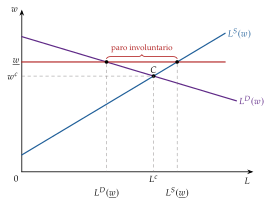
Fuente: elaboración propia a partir de Cahuc, Carcillo y Zylberberg (2014, cap. 3).
Equilibrio temporal y normal de Marshall en el mercado de trabajo
Marshall (1890) cuenta el ajuste de un mercado con el ejemplo del pescado [ver tema 3.A.16], y su análisis se aplica al trabajo (De Vroey, 2016, fig. 1.1). Se distinguen 3 curvas (gráfico 7):
la oferta de mercado, vertical: en el periodo de mercado, el número de trabajadores disponibles está dado;
la oferta normal, creciente: con tiempo para ajustarse, entran trabajadores en el oficio (formación, migración, participación) si el salario sube;
la demanda, la misma en los 2 periodos.
Partimos del equilibrio \(A\). Una perturbación que eleva la productividad marginal desplaza la demanda hacia arriba:
en el equilibrio temporal \(B\), con la oferta fija, sube solo el salario, con el mismo empleo;
en el equilibrio normal \(C\), la oferta responde: el empleo sube y el salario baja respecto a \(B\), aunque queda por encima del de \(A\).
El mercado se vacía en todo momento, también durante el ajuste: en ningún periodo hay paro, porque la oferta de mercado coincide siempre con la demanda.
Para Matthews (1990), el paro no era una preocupación central en Marshall: el problema social que le inquietaba era la pobreza, y el paro solo era una de sus causas.
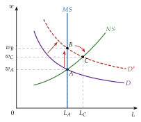
Fuente: elaboración propia a partir de De Vroey (2016, fig. 1.1) y Marshall (1890, lib. V).
I.4. Valoración
El modelo neoclásico es la referencia de eficiencia: explica la participación, el salario como precio de la productividad y el ajuste vía salarios. Pero tiene 2 puntos débiles.
El supuesto más frágil es la precio-aceptación (supuesto 4). Si la empresa es la única que contrata en su mercado, o si las fricciones hacen que no pierda a todos sus trabajadores al bajar el salario, tiene poder de monopsonio: se enfrenta a una oferta creciente \(w_L(L)\) y, para contratar más, tiene que subir el salario de todos. Contrata hasta que el valor del producto marginal iguala el gasto marginal del trabajo, \(\mathrm{GMg}_L\) [ver tema 3.A.17]: \[\mathrm{VPMg}_L=\mathrm{GMg}_L=w_L(L)\Big(1+\frac{1}{\varepsilon_{L,w_L}}\Big)\ \Longleftrightarrow\ \frac{\mathrm{VPMg}_L-w_L}{w_L}=\frac{1}{\varepsilon_{L,w_L}}\tag{5}\]
Contrata menos y paga menos que en competencia, \(L^M<L^c\) y \(w^M<w^c\), pero no hay paro involuntario: los trabajadores están sobre su curva de oferta (gráfico 8).
Por eso un salario mínimo entre \(w^M\) y \(w^c\) eleva tanto el salario como el empleo, al revés que en competencia (gráfico 9).
Es la lectura habitual del estudio de Card y Krueger (1994) (Nobel 2021): compararon el empleo en 410 establecimientos de comida rápida de Nueva Jersey, donde el salario mínimo pasó de 4,25 a 5,05 dólares por hora en abril de 1992, con los de la vecina Pensilvania, donde no cambió, y no encontraron caída del empleo. También la del monopsonio dinámico, en el que las fricciones dan a cada empresa algo de poder sobre el salario (Manning, 2003).
El caso general, con poder de mercado en el bien y en el trabajo y con sindicatos, está en el anexo D.
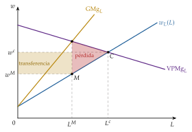

Fuente: elaboración propia a partir de Manning (2003).
La evidencia contradice el vaciado del mercado: hay paro, y es persistente; en España, la tasa de paro sigue por encima del 10 % (Instituto Nacional de Estadística, 2026b). El modelo no lo explica salvo como paro voluntario o como efecto de un salario mínimo. Ya lo advertía Hicks y lo puso en el centro Keynes [ver tema 3.A.4]. Para explicarlo hay que levantar los supuestos de la tabla 1:
la información perfecta y la movilidad sin costes (supuestos 2 y 7): la búsqueda y el paro friccional [ver tema 3.A.26];
la flexibilidad salarial y la precio-aceptación (supuestos 6 y 4): la negociación colectiva, los salarios de eficiencia y los contratos implícitos [ver tema 3.A.27], y la tasa natural y la histéresis [ver tema 3.A.28].
Antes de levantarlos, 2 preguntas que el propio enfoque neoclásico responde: ¿cómo distribuye cada persona sus horas en el tiempo? (II) y ¿por qué no todos los trabajadores cobran lo mismo? (III).
II. Análisis intertemporal de la oferta de trabajo: Lucas y Rapping (1969)
En el cante: la idea con la pregunta de las horas que fluctúan mucho con salarios que varían poco y la pegatina «hacer el agosto» (0′45″); el modelo de 2 periodos de la referencia, con el problema en la pizarra, las 3 condiciones y la condición del ocio relativo como función clave, y las 4 implicaciones en un cuadro de flechas (3′); la elasticidad de Frisch, el ciclo vital, los ciclos reales y el trabajo indivisible (1′15″); la evidencia (0′45″) y la valoración (0′45″). La solución cerrada, el gráfico de la oferta de hoy y el modelo con horizonte infinito (anexo C) son de profundización.
Conclusión anticipada: a lo largo del tiempo, se trabaja más cuando trabajar compensa más; los cambios transitorios del salario mueven mucho más las horas que los permanentes, y eso hace del mercado de trabajo una pieza central de los ciclos.
II.1. Idea
Hasta ahora, el análisis ha sido estático: un solo periodo. Pasamos ahora a las decisiones a lo largo del tiempo, con una pregunta empírica: ¿por qué las horas trabajadas fluctúan tanto a lo largo del ciclo si los salarios reales varían poco? Con una oferta estática poco elástica, mover el empleo exigiría grandes cambios del salario.
Lucas y Rapping (1969) proponen que el individuo elige cuándo trabajar: el ocio de hoy y el de mañana son sustitutivos, y un cambio transitorio del salario basta para mover mucho las horas. Buscaban microfundamentar el mercado de trabajo, como Friedman y Modigliani habían hecho con el consumo [ver tema 3.A.33] y Eisner y Jorgenson con la inversión, y su artículo fue original en 2 cosas:
el foco en la oferta de trabajo, de agentes que optimizan a lo largo del tiempo, y no en la demanda, como sus predecesores;
un mercado de trabajo que se vacía siempre: abandona el paro involuntario, central en la macroeconomía keynesiana de la época. Lo que se mide como paro sería, en parte, sustitución intertemporal voluntaria. Es la base de la nueva macroeconomía clásica [ver tema 3.A.6] y de los ciclos reales [ver tema 3.A.42].
El marco sirve también para la oferta a lo largo de la vida y para la decisión de jubilarse, el fin definitivo de la participación.
Es el refrán de hacer el agosto: trabajar a destajo cuando la temporada paga bien y descansar cuando paga poco.
II.2. Modelo
i) Supuestos
Un hogar vive 2 periodos, \(t=1,2\), sin incertidumbre ni dinero: todas las variables son reales.
En cada periodo dispone de una unidad de tiempo, que reparte entre trabajo \(L_t\) y ocio \(1-L_t\) (la dotación \(O_0\) se normaliza a 1).
Preferencias separables en el tiempo y entre consumo y ocio, con factor de descuento \(\beta\equiv 1/(1+\rho)\), con \(\rho\) la tasa de descuento: en la versión de referencia, \(\ln C_t+b\ln(1-L_t)\), con \(b>0\) el peso del ocio.9
Mercado de capitales perfecto: el hogar ahorra o se endeuda al tipo de interés real \(r\). Salarios reales \(w_1\) y \(w_2\) conocidos y sin renta no laboral.
ii) Desarrollo
Problema: se elige el consumo y las horas de cada periodo sujetos a la restricción presupuestaria intertemporal, que iguala el valor actual del consumo y el de la renta del trabajo [ver tema 3.A.33]: \[\begin{array}{rl}\displaystyle \max_{C_1,C_2,L_1,L_2} & \displaystyle \ln C_1+b\ln(1-L_1)+\beta\big[\ln C_2+b\ln(1-L_2)\big] \\ \text{s.a.} & C_1+\dfrac{C_2}{1+r}=w_1L_1+\dfrac{w_2L_2}{1+r}\end{array}\tag{6}\]
Condiciones de primer orden, con \(\lambda\) la utilidad marginal de la riqueza: \[\begin{aligned} \frac{b\,C_t}{1-L_t}&=w_t &&\text{(intratemporal, como en el modelo estático)}\\ \frac{C_2}{C_1}&=\beta(1+r) &&\text{(ecuación de Euler del consumo)} \end{aligned}\] La primera es la tangencia del modelo estático, \(\mathrm{RMS}_{OC}=w_t\), en cada periodo, y la segunda, la regla del consumo intertemporal [ver tema 3.A.29]. Dividiendo las condiciones del ocio de los 2 periodos, la condición intertemporal del ocio:10
\[\frac{1-L_1}{1-L_2}=\frac{w_2}{\beta(1+r)\,w_1}\tag{7}\]
Interpretación: la oferta relativa de trabajo depende del salario relativo intertemporal, \(w_1(1+r)/w_2\): lo que vale una hora de trabajo de hoy, invertida al tipo \(r\), frente a una hora de mañana. En forma general, \[\frac{L_1}{L_2}=f\Big(\underset{+}{\frac{w_1}{w_2}},\ \underset{+}{r},\ \underset{-}{\rho}\Big)\]
Solución cerrada: con esta utilidad,11 \[L_1=1-\frac{b}{(1+b)(1+\beta)}\left[1+\frac{w_2}{(1+r)\,w_1}\right]\] que crece con \(w_1\) y con \(r\) y decrece con \(w_2\) (gráfico 10). Si \(w_2=(1+r)w_1\) y \(\beta=1\), \(L_1=1/(1+b)\): la oferta del modelo estático con esta utilidad.
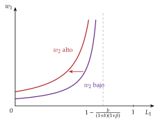
Fuente: elaboración propia a partir de Lucas y Rapping (1969).
iii) Implicaciones
La condición (7) y la solución cerrada dan 4 resultados (tabla 2):
Aumento transitorio del salario (\(w_1\) sube y \(w_2\) no): se trabaja más hoy y menos mañana. La riqueza de toda la vida apenas cambia, así que domina la sustitución: es la sustitución intertemporal del trabajo.
Aumento permanente (\(w_1\) y \(w_2\) suben en la misma proporción): no cambia la oferta relativa entre periodos. Sobre el nivel de horas, el efecto es el del modelo estático, ambiguo; con estas preferencias y sin renta no laboral, el efecto renta compensa exactamente al de sustitución y las horas de cada periodo no cambian.
Aumento del tipo de interés: trabajar y ahorrar hoy rinde más, así que se trabaja más hoy y menos mañana.
Más impaciencia (\(\rho\) sube y \(\beta\) baja): el mañana vale menos, así que hay más ocio hoy y más trabajo mañana.
| Cambio | Horas hoy, \(L_1\) | Horas mañana, \(L_2\) | Por qué |
|---|---|---|---|
| Salario transitorio, \(w_1\uparrow\) | \(\uparrow\) | \(\downarrow\) | sustitución intertemporal; casi sin efecto riqueza |
| Salario permanente, \(w_1,w_2\uparrow\) | \(=\) | \(=\) | la sustitución y la renta se compensan |
| Tipo de interés, \(r\uparrow\) | \(\uparrow\) | \(\downarrow\) | trabajar y ahorrar hoy rinde más |
| Impaciencia, \(\rho\uparrow\) | \(\downarrow\) | \(\uparrow\) | el ocio de hoy vale más |
Fuente: elaboración propia a partir de la solución del modelo (6).
Implicación de política: las medidas transitorias (una rebaja temporal de las cotizaciones o de los impuestos sobre el trabajo) mueven las horas mucho más que las permanentes.
El modelo con horizonte infinito, el del artículo original, con activos y la condición de no-Ponzi, da las mismas 3 condiciones (anexo C) [ver tema 3.A.29].
II.3. Extensiones
Elasticidad de Frisch.12 Mide cómo responden las horas ante una variación del salario cuando la utilidad marginal de la riqueza, \(\lambda\), no cambia. Mide la sustitución intertemporal pura: la respuesta a los cambios previstos o transitorios del salario, que apenas alteran la riqueza de toda la vida. Con la utilidad de cada periodo que usan los modelos de ciclo, \(u(C_t,L_t)=\ln C_t-\chi\,L_t^{1+\varphi}/(1+\varphi)\), con \(\chi\) el peso de la desutilidad del trabajo, la condición de las horas es \(\chi L_t^{\varphi}=\lambda_t w_t\) y \[\varepsilon^{F}_{L,w}\equiv\left.\frac{\partial\ln L_t}{\partial\ln w_t}\right|_{\lambda}=\frac{1}{\varphi}\tag{8}\] Con la utilidad de (6) es \((1-L_t)/L_t\): si se trabaja un tercio del tiempo, 2. Es la mayor de las 3 elasticidades (I.1) y la que necesita la macroeconomía dinámica [ver tema 3.A.42].13
Ciclo vital y jubilación. El salario sigue a lo largo de la vida un perfil en U invertida (bloque III); como esos cambios son previstos, las horas siguen al salario con la elasticidad de Frisch: se trabaja más en las edades de salario alto. La jubilación es la salida definitiva del mercado, y la deciden la riqueza acumulada, las prestaciones y las restricciones legales:
retrasarla tiene un valor de opción: quien sigue trabajando conserva la posibilidad de jubilarse más tarde con una pensión mayor, y se jubila cuando ese valor deja de compensar (Stock y Wise, 1990);
entre países, cuanto más penaliza la pensión seguir trabajando (el impuesto implícito sobre el trabajo de los mayores), antes se jubila la gente (Gruber y Wise, 1999).
Ciclos reales. Kydland y Prescott (1982) trasladan el mecanismo de Lucas y Rapping a un modelo de equilibrio general sometido a perturbaciones reales, como un aumento de la productividad del trabajo, que sube el salario real. Hay 2 efectos contrapuestos:
un efecto riqueza: los agentes son más ricos, consumen más y trabajan menos;
un efecto de sustitución intertemporal: trabajar hoy rinde más, y se trabaja más hoy.
Cuál domina depende de la persistencia del choque:
un choque transitorio sube el salario de hoy frente al de mañana: domina la sustitución intertemporal, se trabaja y se produce más hoy y menos mañana, y se genera un ciclo;
un choque permanente apenas cambia la oferta relativa entre periodos, porque su efecto riqueza compensa buena parte del de sustitución; su efecto se transmite sobre todo por la inversión y la acumulación de capital, que también generan dinámica;
cuanto más persistente es el choque, menos sustitución intertemporal y más efecto riqueza. Si las fluctuaciones son respuestas óptimas, la política de estabilización no mejora el bienestar [ver tema 3.A.42].
Trabajo indivisible. Si cada persona solo puede trabajar la jornada completa o nada, el ajuste del empleo se hace en el margen extensivo, y la economía responde como si la elasticidad de las horas fuera muy alta aunque la de cada persona sea baja (Hansen, 1985; Rogerson, 1988).
Demanda de trabajo: lo intertemporal en la demanda son los costes de ajuste (contratar, formar, despedir). Sin ellos, la empresa ajusta su plantilla cada periodo como en el modelo estático; con ellos, suaviza el empleo a lo largo del ciclo [ver tema 3.A.26].
II.4. Evidencia empírica
Elasticidades micro pequeñas. MaCurdy (1981) estima la elasticidad de Frisch con datos de panel de varones casados de Estados Unidos, aprovechando que el crecimiento previsto del salario no cambia la riqueza, y obtiene 0,15; Altonji (1986) lo repite con otras medidas del salario. El metaanálisis de Chetty et al. (2011) da 0,54 en las horas, 0,28 en la participación y 0,82 en las horas agregadas.
Diferencias por grupos: las elasticidades de los varones son pequeñas y las de las mujeres, mayores, sobre todo en la decisión de participar (Keane, 2011). La sustitución intertemporal crece con la edad: una subida transitoria del salario mueve poco las horas de los jóvenes, cuya inversión en capital humano pesa más, y mucho las de quienes se acercan a la jubilación (Imai y Keane, 2004; French, 2005).
Experimentos naturales: los mensajeros en bicicleta de Zúrich trabajan más turnos cuando se les sube temporalmente la comisión (Fehr y Goette, 2007), y los taxistas de Nueva York, más horas cuando cada hora rinde más (Farber, 2015), frente a los primeros resultados, que apuntaban a un objetivo diario de ingresos (Camerer et al., 1997): la sustitución intertemporal existe.
El problema de la escala: para reproducir las fluctuaciones del empleo, los modelos de ciclo real necesitan que la elasticidad de Frisch agregada de las horas ronde 2,8, muy por encima del 0,8 de la evidencia micro (Chetty et al., 2011). El trabajo indivisible (II.3) lleva la diferencia al margen extensivo, pero la elasticidad de participación estimada (0,28) está muy lejos de la que suponen esos modelos (2,3) (Chetty et al., 2011).
II.5. Valoración
El modelo da un mecanismo de propagación de los ciclos y la elasticidad clave de la macroeconomía moderna, y es el marco para pensar en los impuestos temporales y en la jubilación.
Sus límites:
el mecanismo exige elasticidades mayores que las que se estiman con datos individuales, la crítica principal a los ciclos reales;
no explica el paro involuntario: en una recesión, los parados estarían «eligiendo» ocio porque el salario es transitoriamente bajo, cuando en los datos buscan empleo y no lo encuentran. Eso lleva a las fricciones y a las rigideces [ver tema 3.A.26] [ver tema 3.A.27] [ver tema 3.A.28];
sigue suponiendo trabajadores iguales y salarios dados.
Pero el salario futuro no cae del cielo: depende de lo que se invierte hoy en formación. Es el objeto del último bloque.
III. Teoría del capital humano y función de ingresos
En el cante. Usos del capital humano (1′30″): la definición, los fundadores y los 5 enfoques en una línea cada uno; en el centro de la pizarra, las 2 cadenas de Becker y Spence, y a la izquierda se marca el supuesto 3 (y el 2 con Spence). Becker (4′): la idea con la pegatina «el saber no ocupa lugar» (0′30″); la condición de inversión en 2 periodos y la de los años de estudio (1′); los perfiles edad-ingresos por capas, imprescindibles (1′); la formación general y la específica (1′15″), y la valoración (0′15″). Mincer (4′30″): la derivación de la escolarización (0′45″); la ecuación completa como función clave, con Ben-Porath en una frase (0′45″); Oaxaca-Blinder y la brecha de género, con Goldin (0′45″); el sesgo de habilidad y los experimentos naturales del Nobel de 2021 (1′15″); los rendimientos actuales y España (0′45″), y la valoración (0′15″). Son de profundización el gráfico de la oferta y la demanda de fondos para estudiar, la caja de la separación de Fisher, el gráfico de la Encuesta de Estructura Salarial (en el cante basta la cifra) y el anexo E.
Conclusión anticipada: la educación es una inversión que se paga con salarios más altos durante toda la vida laboral; la ecuación de Mincer mide su rendimiento, en torno a un 9 % por año de estudios en la media mundial, y los experimentos naturales indican que la mayor parte de esa prima la causa lo que se aprende, no solo quién estudia.
III.1. Usos del capital humano
Una vez visto cuánto y cuándo se trabaja, pasamos a preguntarnos por qué no todas las horas se pagan igual. Hasta aquí, el trabajo era homogéneo (supuesto 3 de la tabla 1); en los datos, el salario de una hora cambia mucho de una persona a otra, y buena parte de esas diferencias se explica por lo que cada uno ha aprendido.
Se llama capital humano a los conocimientos, habilidades y rasgos que hacen más productiva a una persona. Se parece al capital físico en que se acumula con una inversión que cuesta hoy y rinde mañana, y se diferencia en que no se puede separar de quien lo posee: no se vende ni sirve de garantía de un préstamo.
La idea es antigua,14 pero la teoría nace en los años 60, con Mincer (1958), Schultz (1961) y Becker (1962, 1964).15
¿Cómo aumenta la productividad? Acemoglu y Autor (2011, cap. 1) distinguen 5 maneras de ver el capital humano:
Becker: un stock de habilidades, \(h\), que entra directamente en la función de producción y hace al trabajador más productivo en todas sus tareas, aunque no en todas por igual.
Gardner: el capital humano tiene muchas dimensiones (habilidades físicas, cognitivas, sociales), como las inteligencias múltiples del psicólogo Howard Gardner (Gardner, 1983); quien destaca en una puede no hacerlo en otra.
Schultz y Nelson-Phelps: es la capacidad de adaptarse a un entorno cambiante y de adoptar tecnologías nuevas (Nelson y Phelps, 1966; Schultz, 1975) [ver tema 3.A.44].
Bowles-Gintis: la escuela enseña sobre todo a trabajar en organizaciones jerárquicas, a seguir instrucciones y a aceptar las normas sociales (Bowles y Gintis, 1976).
Spence: los títulos son una señal de una habilidad que ya se tenía, no la causa de la productividad (Spence, 1973) [ver tema 3.A.13].16
En los 4 primeros enfoques, la educación aumenta la productividad y por eso se paga (también en el de Bowles y Gintis, porque obedecer es útil a la empresa). En el de Spence, solo la revela: se levanta además el supuesto 2, la información perfecta. Las 2 cadenas causales son:
Becker: educación \(\to\) productividad \(\to\) salario;
Spence: productividad \(\to\) educación \(\to\) salario.
Las 2 predicen que quien estudia más cobra más, y por eso distinguirlas es una tarea de la evidencia empírica (III.3). La economía laboral parte del enfoque de Becker, y esta exposición también.
III.2. Teoría del capital humano de Becker (1964)
a) Idea
Becker (1964) trata la educación como cualquier otra inversión:
tiene costes: los directos (matrícula, libros, desplazamientos), el coste de oportunidad, que es el salario al que se renuncia mientras se estudia, y el esfuerzo;
da rendimientos: si lo aprendido eleva la productividad, el mercado lo paga con un salario más alto el resto de la vida laboral.
Se estudia mientras lo que se gana, en valor presente, supere lo que cuesta. Las diferencias de salario reflejan así diferencias de productividad, y estas, lo que cada uno ha invertido en sí mismo.
Lo resume la pegatina el saber no ocupa lugar… pero sí tiempo: el coste principal de estudiar no es la matrícula, sino el salario que se deja de ganar.
b) Modelo: la decisión de cuánto estudiar
i) Supuestos
Un individuo decide cuántos años \(S\) estudia a tiempo completo al principio de su vida; después trabaja a tiempo completo hasta la jubilación, en \(T\).
Mientras estudia no cobra y paga un coste directo \(c\) por año. Después cobra cada año un salario real \(w(S)\), creciente en los años de estudio y con rendimientos decrecientes: \(w'(S)>0\) y \(w''(S)<0\) (aprender a leer rinde más que el décimo máster).
Mercado de capitales perfecto, al tipo de interés real \(r\), y la educación no da utilidad por sí misma. Entonces la decisión de cuánto estudiar se separa de la de cuánto consumir: basta con elegir la que hace máximo el valor presente de la renta (caja de abajo).
ii) Desarrollo
La versión más sencilla, en 2 periodos: en el primero se acumula capital humano \(h\) con un coste \(c(h)\), que incluye el salario perdido; en el segundo se cobra \(w(h)\). Se invierte hasta que el ingreso marginal descontado de una unidad más de capital humano iguala su coste marginal: \[\max_{h}\ -c(h)+\frac{w(h)}{1+r}\ \Longrightarrow\ \underbrace{\frac{w'(h)}{1+r}}_{\mathrm{IMg}_h}=\underbrace{c'(h)}_{\mathrm{CMg}_h}\tag{9}\]
Con años de estudio: el valor presente de la renta de quien estudia \(S\) años es lo que cobra desde \(S\) hasta \(T\) menos lo que paga mientras estudia, \[\max_{S}\ V(S)=\int_{S}^{T}w(S)\,e^{-rt}\,dt-\int_{0}^{S}c\,e^{-rt}\,dt\] Un año más de estudio tiene 3 efectos: sube el salario de todos los años que quedan, retrasa un año el primer sueldo y añade un año de costes directos. La condición de primer orden, \(V'(S^*)=0\), iguala el primero con los otros 2: \[w'(S^*)\,\frac{1-e^{-r(T-S^*)}}{r}=w(S^*)+c\]
Con una vida laboral larga (\(T\to\infty\)), el primer miembro es el valor presente de una renta perpetua de \(w'(S^*)\), y la condición se lee como una regla de inversión: la tasa marginal de rendimiento de estudiar, \(\rho(S)\), iguala al tipo de interés, \[\rho(S^*)\equiv\frac{w'(S^*)}{w(S^*)+c}=r\] Cada año de estudio rinde \(w'(S)\) al año para siempre y cuesta \(w(S)+c\): se estudia mientras rinda más que prestar ese dinero en el mercado.
Interpretación gráfica (Becker, 1967) (gráfico 11). La tasa marginal de rendimiento es la demanda de inversión en educación, decreciente por los rendimientos decrecientes. El coste marginal de los fondos con que se financia es la oferta, creciente y escalonada: se acude primero a la financiación más barata (los recursos de la familia, las becas, los préstamos subvencionados) y después a la más cara (los préstamos de mercado). Se estudia hasta que se cortan.
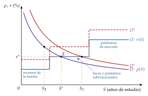
Fuente: elaboración propia a partir de Becker (1967).
La decisión de estudiar con preferencias de consumo: la separación de Fisher
La decisión puede verse en 2 periodos con las herramientas del consumo intertemporal (gráfico 12). El individuo reparte su tiempo del primer periodo entre trabajar y formarse:
la frontera de posibilidades de renta, \((y_1,y_2)\), tiene pendiente negativa, porque para ganar más mañana hay que formarse más y ganar menos hoy, y es cóncava, porque cada hora de formación añade menos renta futura que la anterior;
las curvas de indiferencia entre el consumo de hoy y el de mañana, \((C_1,C_2)\), son decrecientes y convexas: se prefiere repartir el consumo.
Sin mercado de capitales, se consume lo que se gana, y la formación la decide la tangencia de una curva de indiferencia con la frontera: el impaciente se forma menos.
Con un mercado de capitales perfecto, se puede prestar y pedir prestado al tipo \(r\), y la decisión se hace en 2 pasos. Primero se elige la formación que hace máxima la riqueza, donde la frontera es tangente a una recta de pendiente \(-(1+r)\), y después se reparte el consumo a lo largo de esa recta según las preferencias. La formación ya no depende de la paciencia: es el teorema de separación de Fisher (Fisher, 1930), que Acemoglu y Autor (2011, cap. 1) aplican al capital humano [ver tema 3.A.33].
Por eso el modelo puede maximizar el valor presente de la renta, igual que una empresa decide una inversión por su valor actual neto [ver tema 3.A.34]. Con restricciones de liquidez, la separación se rompe y quien tiene menos recursos estudia menos.
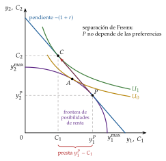
Fuente: elaboración propia a partir de Fisher (1930) y Borjas (2020, cap. 6).
iii) Implicaciones
Quién estudia más: la condición de primer orden da los determinantes de \(S^*\).
Los más hábiles: aprenden más deprisa, su curva de demanda está más arriba y estudian más.
Los que tienen más recursos o mejor acceso al crédito: su curva de oferta está más abajo y también estudian más. Habilidad y financiación explican, juntas, la desigualdad en la educación y en los salarios (Becker, 1967).
Estudian menos quienes afrontan un tipo de interés más alto, un coste directo mayor o una vida laboral más corta.
Cuándo se estudia: al principio de la vida. Con \(T\) finito, el factor \(1-e^{-r(T-S)}\) cae cuanto más tarde se estudia, porque quedan menos años para cobrar el rendimiento. Por eso conviene acumular conocimientos al empezar la vida laboral y, después, trabajar sin apenas seguir formándose.
El vínculo con la función de ingresos: sin costes directos (\(c=0\)), la condición dice que \(w'(S^*)/w(S^*)=r\): en el margen, un año más de estudio sube el salario en un porcentaje igual al tipo de interés. Es la idea de la ecuación de Mincer (III.3).
Perfiles edad-ingresos (gráfico 13). La decisión se ve comparando 2 trayectorias a lo largo de la vida, la de quien empieza a trabajar al acabar la secundaria y la de quien estudia una carrera (McConnell y Brue, 1997):
mientras estudia, el universitario tiene ingresos negativos, los costes directos, y deja de ganar el salario del otro, el coste de oportunidad;
después gana más, y la distancia entre las 2 curvas es el rendimiento bruto de la carrera;
las 2 curvas son cóncavas: crecen deprisa al principio, cada vez más despacio, y pueden caer algo al final de la vida laboral; se sigue aprendiendo en el trabajo, pero cada vez menos;
conviene estudiar si el valor actual neto es positivo, es decir, si el rendimiento bruto descontado supera la suma de los 2 costes; o, lo que es lo mismo, si la tasa interna de rendimiento de la carrera supera a \(r\).
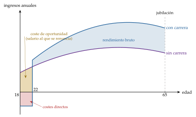
Fuente: elaboración propia a partir de McConnell y Brue (1997) y Borjas (2020, cap. 6).
c) Extensiones: formación general y formación específica
Hasta aquí, quien invertía era el trabajador. Pero buena parte de la formación se recibe en la empresa, y una mejora de la productividad solo se convierte en salario si hay otras empresas dispuestas a pagarla: con un solo empleador posible, la empresa no tendría por qué subir el sueldo. Por eso Becker (1964) distingue 2 tipos de formación:
la formación general aumenta la productividad del trabajador en cualquier empresa (un idioma, la contabilidad, el manejo de una hoja de cálculo): va con el trabajador;
la formación específica solo la aumenta en la empresa que la da (sus procesos, sus clientes, sus programas): va con el puesto.
i) Supuestos
La relación dura 2 periodos y el precio del bien se normaliza a 1, de modo que el valor del producto marginal y el salario se miden en las mismas unidades.
En el primer periodo, la empresa forma al trabajador con un coste \(c\).
Sin formación, el trabajador produce \(\mathrm{VPMg}^0\) en cualquier empresa, y en un mercado competitivo ese es también lo que le pagarían fuera. Con formación, en el segundo periodo produce \(\mathrm{VPMg}^1>\mathrm{VPMg}^0\): en todas las empresas si es general, y solo en la suya si es específica.
ii) Desarrollo
Formación general. En el segundo periodo, otras empresas ofrecerán \(w_2=\mathrm{VPMg}^1\), así que la empresa que forma tiene que pagar eso o perder al trabajador, y no recupera nada de lo invertido. Solo ofrece la formación si el trabajador la paga con un salario menor mientras se forma, \(w_1=\mathrm{VPMg}^0-c\). Al trabajador le conviene si \[\frac{\mathrm{VPMg}^1-\mathrm{VPMg}^0}{1+r}\geq c\] La inversión se hace cuando es eficiente y la paga el trabajador: es el caso de los aprendices, los becarios o los médicos residentes, que cobran poco mientras aprenden.
Formación específica. Fuera, el trabajador sigue valiendo \(\mathrm{VPMg}^0\), y ninguna de las 2 partes quiere pagarla sola:
si la pagara la empresa y le siguiera pagando \(\mathrm{VPMg}^0\), el trabajador podría irse sin perder nada, y la empresa perdería su inversión;
si la pagara el trabajador y cobrara \(\mathrm{VPMg}^1\), la empresa podría despedirlo, y sería él quien la perdiera.
La solución es repartir el coste y la renta: el trabajador paga una parte \(\gamma\in(0,1)\) del coste y en el segundo periodo cobra \[w_2=\mathrm{VPMg}^0+\gamma\big(\mathrm{VPMg}^1-\mathrm{VPMg}^0\big)\] más que fuera y menos de lo que produce dentro, con \(\gamma\) su poder de negociación [ver tema 3.A.27].
iii) Implicaciones
Con formación específica, las 2 partes ganan con la relación y pierden si se rompe:
las bajas voluntarias y los despidos caen con la antigüedad, y los salarios crecen con ella;
en una recesión se despide antes a los recién llegados, que tienen menos capital específico: «el último en entrar, el primero en salir»;
los trabajadores con capital específico son difíciles de sustituir por los de fuera: es una de las raíces del poder de los insiders en la negociación salarial [ver tema 3.A.27]. Se levanta el supuesto 7 de la tabla 1: cambiar de empleo o de plantilla tiene un coste.
Hay menos formación general de la eficiente si el trabajador no puede pagarla: por restricciones de liquidez o porque un salario mínimo impide cobrar menos mientras aprende.
Acemoglu y Pischke (1998, 1999) matizan el resultado: con mercados imperfectos (fricciones, información asimétrica sobre lo aprendido) el salario sube menos que la productividad, y las empresas pagan también formación general, como en el sistema alemán de aprendizaje.
d) Valoración
La teoría explica por qué se estudia al principio de la vida, por qué el salario crece con la experiencia y con la antigüedad, quién paga cada tipo de formación y cómo la habilidad y los recursos de la familia generan desigualdad.
Sus límites:
el capital humano no es el único determinante del salario: la edad, el sexo, la discriminación o el poder de mercado también cuentan;
supone información perfecta sobre los costes y los rendimientos de estudiar, algo poco realista;
con fallos de mercado, como las restricciones de liquidez en el crédito, quien desearía formarse puede no poder hacerlo, y la inversión queda por debajo de la eficiente.
Y deja una pregunta abierta: ¿cuánto del salario de quien estudia más se debe a lo que aprende y cuánto a quién es? Para contestarla hace falta una función de ingresos que se pueda estimar: la de Mincer.
III.3. Función de ingresos de capital humano: la ecuación de Mincer
a) Idea
Una vez vista la decisión de invertir, pasamos a medir su rendimiento. ¿Qué determina el salario de un trabajador: la educación, la experiencia, sus características personales?
Mincer (1974) convierte la teoría en una ecuación que se estima con datos de salarios, años de estudio y años de experiencia: la función de ingresos de capital humano, probablemente la ecuación más estimada de la economía laboral. Su coeficiente de la escolaridad dice cuánto sube el salario con un año más de estudios, una cifra clave para decidir el gasto en educación o las becas.
b) Modelo
i) Supuestos
Escolarización (Mincer, 1958): estudiar solo cuesta el salario que se deja de cobrar; la vida laboral es igual de larga para todos y muy larga; el tipo de descuento \(r\) es el mismo para todos, y los individuos solo se diferencian en los años que estudian.
Experiencia: tras dejar la escuela se sigue invirtiendo en formación en el trabajo, pero cada vez menos.
ii) Desarrollo
Los años de estudio. Si todos pueden elegir cualquier número de años y unos estudios se pagaran mejor que otros en valor presente, nadie elegiría los demás. En equilibrio, el valor presente de la renta tiene que ser el mismo para cualquier \(S\): los salarios compensan el tiempo de estudio. Con una vida laboral muy larga, \(w(S)\,e^{-rS}/r=w(0)/r\), y tomando logaritmos, \[\ln w(S)=\ln w(0)+r\,S\tag{10}\] Cada año de estudios sube el salario en un \(r\cdot 100\) %: el coeficiente de la escolaridad es la tasa de rendimiento de la educación, y en equilibrio iguala al tipo de interés, como en la condición de Becker sin costes directos.
La experiencia. Según Ben-Porath (1967), el capital humano sigue creciendo con la parte del tiempo que se dedica a formarse, \(\dot h=a\,[1-u]\,h\), con \(a>0\) la aptitud para aprender y \(1-u\) esa fracción del tiempo; como cada vez quedan menos años para amortizarla, esa fracción cae con la edad. Si cae de forma lineal con la experiencia, el logaritmo del salario es una función cuadrática y cóncava de la experiencia (anexo E).
Juntando las 2 partes, para cada individuo \(i\):
\[\ln w_i=\beta_0+\beta_1S_i+\beta_2X_i+\beta_3X_i^2+\varepsilon_i,\qquad \beta_1\approx r,\ \beta_2>0,\ \beta_3<0\tag{11}\]
donde \(w_i\) es el salario real, \(S_i\) los años de estudios, \(X_i\) los años de experiencia y \(\varepsilon_i\) la perturbación.
iii) Implicaciones
\(\beta_1\) es el aumento porcentual del salario por un año más de estudios: el rendimiento privado de la educación.
\(\beta_2\) y \(\beta_3\) dan un perfil cóncavo en la experiencia: el salario crece deprisa al empezar a trabajar, después más despacio y alcanza su máximo con \(X=-\beta_2/(2\beta_3)\) años de experiencia. Son los perfiles edad-ingresos del gráfico 13.
Al estar en logaritmos, los perfiles de quienes más han estudiado están por encima en todas las edades, y la diferencia en euros crece con la edad (gráfico 14).
c) Extensiones
Brechas salariales: la descomposición de Oaxaca-Blinder. Oaxaca (1973) y Blinder (1973), por separado, usan la ecuación de Mincer para estudiar por qué cobran distinto 2 grupos, como hombres (A) y mujeres (B) o 2 grupos étnicos. Con una ecuación para cada grupo, con su vector de características \(\vec{x}\) (estudios, experiencia, ocupación…) y sus coeficientes estimados \(\hat{\vec{\beta}}\), la diferencia entre las medias de los logaritmos del salario se parte en 2:17 \[\overline{\ln w}_{\mathrm{A}}-\overline{\ln w}_{\mathrm{B}}=\underbrace{(\bar{\vec{x}}_{\mathrm{A}}-\bar{\vec{x}}_{\mathrm{B}})\cdot\hat{\vec{\beta}}_{\mathrm{A}}}_{\text{explicada: características}}+\underbrace{\bar{\vec{x}}_{\mathrm{B}}\cdot(\hat{\vec{\beta}}_{\mathrm{A}}-\hat{\vec{\beta}}_{\mathrm{B}})}_{\text{no explicada: rendimientos}}\tag{12}\]
la parte explicada se debe a que los grupos tienen distintas características;
la no explicada, a que el mercado paga de forma distinta las mismas características. Se asocia a la discriminación, aunque recoge también todo lo que no se observa.
Aplicaciones. Blau y Kahn (1992) la usan para comparar la brecha de género entre países. En España, con los microdatos de la Encuesta de Estructura Salarial de 2010 y una variante de la descomposición, Murillo Huertas, Ramos y Simón (2017) parten una brecha bruta de 20 puntos logarítmicos: unos 12 se deben a las características de los trabajadores y de sus centros de trabajo, y casi 8 quedan sin explicar.
La brecha hoy. En España, el salario medio anual de las mujeres fue en 2024 el 83,9 % del de los hombres, una brecha del 16,1 % (Instituto Nacional de Estadística, 2026a). Por hora trabajada, la brecha sin ajustar es del 7,3 %, por debajo del 11,1 % de la UE (Eurostat, 2026). Las 2 cifras no se comparan: la anual recoge también que las mujeres trabajan más a tiempo parcial.
Goldin y la penalización por hijos (Nobel 2023).
Hoy la brecha apenas se debe a la educación (las mujeres estudian más que los hombres en casi todos los países ricos), sino a lo que pasa dentro de cada ocupación. Muchos empleos pagan de forma más que proporcional las jornadas largas y poco flexibles, que son las que menos encajan con el cuidado de los hijos (Goldin, 2014).
Kleven, Landais y Søgaard (2019) comparan, con datos administrativos de Dinamarca, los ingresos de hombres y mujeres antes y después del primer hijo. Los de las madres caen y no se recuperan, con una penalización a largo plazo de en torno al 20 %, y los de los padres no cambian. La penalización por hijos explica una parte creciente de la desigualdad de ingresos entre hombres y mujeres: en torno al 40 % en 1980 y al 80 % en 2013 (Kleven, Landais y Søgaard, 2018).
La habilidad tiene muchas dimensiones, como decía Gardner: las habilidades no cognitivas (la constancia, el autocontrol) influyen en los salarios tanto como las cognitivas (Heckman, Stixrud y Urzua, 2006).
d) Evidencia empírica
Rendimientos estimados por mínimos cuadrados ordinarios (MCO). En una revisión de 1.120 estimaciones de 139 países, cada año adicional de estudios se traduce de media en un salario alrededor de un 9 % mayor, algo menos en los países de renta alta (8 %), con una cifra muy estable en el tiempo (Psacharopoulos y Patrinos, 2018): es difícil encontrar una inversión más rentable. Por niveles, el rendimiento más alto es hoy el de los estudios superiores, en torno al 15 % (Montenegro y Patrinos, 2014), y ha crecido en las últimas décadas.
El problema: ¿es causal? \(\beta_1\) solo mide el efecto de estudiar si los años de estudios no están correlacionados con lo que no se observa:
si los más hábiles estudian más y ganarían más de todos modos, \(\beta_1\) sobreestima el rendimiento: es el sesgo de habilidad (ability bias), que ya había señalado Becker;
si los años de estudio se miden con error, \(\beta_1\) lo subestima. Además, controlar por el cociente intelectual apenas reduce el rendimiento estimado (Griliches, 1977).
La respuesta: los experimentos naturales (Nobel 2021). Card recibió la mitad del premio por sus contribuciones empíricas a la economía laboral, y Angrist e Imbens, la otra mitad, por sus aportaciones de método al estudio de la causalidad (Nobel Prize Outreach, 2021). La idea es buscar algo que cambie los años de estudio por azar, sin relación con la habilidad, y usarlo como variable instrumental:
trimestre de nacimiento: en Estados Unidos, la escolarización es obligatoria hasta una edad, y como se entra en la escuela por años naturales, quien nace a principios de año puede dejarla con menos cursos hechos. Con este instrumento, Angrist y Krueger (1991) obtienen rendimientos del 7-10 % por cada curso adicional, muy cercanos a los de MCO;
distancia a la universidad: crecer cerca de una abarata estudiar. Card (1995) obtiene así un rendimiento entre un 25 y un 60 % mayor que el de MCO, concentrado en los hijos de padres con pocos estudios;
gemelos idénticos: comparten genes y familia, así que la diferencia de salario entre el que estudia más y el que estudia menos no se debe a la habilidad heredada. Ashenfelter y Krueger (1994) estiman un rendimiento del 12-16 % por año;18
efecto medio local: Imbens y Angrist (1994) muestran que, si el rendimiento cambia de una persona a otra, la variable instrumental mide el de quienes cambian su decisión por el instrumento (local average treatment effect, LATE), no el de toda la población.
Conclusión: las estimaciones con instrumentos son iguales o mayores que las de MCO (Card, 1999, 2001). Una explicación es que los instrumentos mueven a quienes tenían más difícil estudiar, a menudo por falta de recursos, y para ellos el rendimiento es mayor. La educación causa buena parte de la prima salarial: la señal de Spence no lo explica todo.19
España. Los datos reproducen los perfiles de la teoría (gráfico 14): el salario crece con la edad a un ritmo decreciente, y la pendiente es mayor cuanto más se ha estudiado. Con estudios universitarios largos, el salario medio a partir de los 55 años supera en un 86 % al de quien tiene la segunda etapa de secundaria (Instituto Nacional de Estadística, 2024).
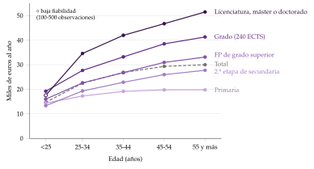
Fuente: INE, Encuesta de Estructura Salarial 2022, tabla 36870 (Instituto Nacional de Estadística, 2024).
e) Valoración
La función de ingresos de Mincer describe bien los salarios observados, y su coeficiente de la escolaridad es, con los experimentos naturales, una de las cifras mejor medidas de la economía.
Sus límites:
el coeficiente solo es una tasa de rendimiento con supuestos fuertes (sin costes directos ni impuestos, todos con la misma vida laboral); Heckman, Lochner y Todd (2006) muestran que ya no se cumplen y que la relación entre los años de estudio y el salario ha dejado de ser lineal, porque los títulos pesan más que los años;
mide el rendimiento privado; el social puede ser mayor, si el capital humano de cada uno hace más productivos a los demás, y es la pieza central de los modelos de crecimiento con capital humano [ver tema 3.A.43] [ver tema 3.A.44];
con datos de salarios y estudios es difícil separar la productividad de la señal: los experimentos naturales lo consiguen solo en parte.
Conclusión
Recapitulación: En conclusión, el modelo neoclásico explica el empleo y el salario con las mismas herramientas que cualquier otro mercado:
la oferta sale del salario de reserva y de los efectos renta y sustitución; la demanda, del valor del producto marginal, y el salario flexible vacía el mercado, sin paro involuntario salvo que un salario mínimo lo impida;
llevado al tiempo con Lucas y Rapping, explica por qué las horas responden más a los cambios transitorios del salario que a los permanentes;
con capital humano, explica por qué los salarios difieren, y la ecuación de Mincer mide cuánto rinde estudiar.
Relevancia: estas elasticidades y rendimientos son los números con que se evalúan los impuestos sobre el trabajo [ver tema 4.B.10], el salario mínimo y la política educativa [ver tema 4.A.16] [ver tema 4.A.2].
Extensiones: al levantar la información perfecta y la movilidad llegan la búsqueda y el paro friccional [ver tema 3.A.26]; al levantar la flexibilidad salarial, la negociación, los salarios de eficiencia y los contratos implícitos [ver tema 3.A.27], y la tasa natural y la histéresis [ver tema 3.A.28]. La oferta intertemporal es una pieza de los ciclos reales [ver tema 3.A.42], y el capital humano, del crecimiento [ver tema 3.A.43] [ver tema 3.A.44].
Opinión: el modelo neoclásico falla como descripción del paro, pero es más útil como mapa de incentivos que como fotografía del mercado. Y la revolución de la credibilidad, premiada en 2021 y 2023, ha cambiado la manera de discutirlo: se ha pasado de debatir supuestos a medir efectos.
Idea final: decíamos al empezar que el tiempo es oro. Ahora sabemos cuánto vale una hora: lo que se paga por ella en el margen, el salario; pero ese precio no es el mismo hoy que mañana, y depende sobre todo de lo que cada uno haya invertido antes en sí mismo.
A. Anexo: condiciones de Kuhn-Tucker de la oferta y ecuación de Slutsky con dotación
A.1. Condiciones de Kuhn-Tucker del problema de la oferta
El problema (1) tiene 2 restricciones que pueden saturarse: la presupuestaria y la de tiempo, \(O\leq O_0\) (no se puede tener más ocio que horas). Con un multiplicador para cada una, \(\lambda\) y \(\mu\), la lagrangiana es \[\mathcal{L}=U(C,O)+\lambda\big[w\,O_0+\overline{W}-C-w\,O\big]+\mu\big[O_0-O\big]\]
Las condiciones de Kuhn-Tucker son 4 grupos:
Estacionariedad (segunda ley de Gossen): la utilidad marginal de cada bien no supera su coste en utilidad, el precio por la utilidad marginal de la renta, \[\frac{\partial\mathcal{L}}{\partial C}=U_C-\lambda\leq 0,\qquad \frac{\partial\mathcal{L}}{\partial O}=U_O-\lambda\,w-\mu\leq 0\]
Restricciones: \(C+w\,O\leq w\,O_0+\overline{W}\) y \(O\leq O_0\), con la renta no laboral \(\overline{W}\) en el lado derecho.
No negatividad: \(C\geq 0\), \(O\geq 0\), \(\lambda\geq 0\), \(\mu\geq 0\).
Holgura complementaria: cada producto de una condición por su variable es nulo, \[C\,(U_C-\lambda)=0,\qquad O\,(U_O-\lambda\,w-\mu)=0,\qquad \lambda\big[w\,O_0+\overline{W}-C-w\,O\big]=0,\qquad \mu\,(O_0-O)=0\] Es una igualdad por construcción: de los 2 factores de cada producto, al menos uno se anula, porque o la variable es 0 (esquina) o la condición se cumple con igualdad (interior).
Lectura:
con no saciedad local, \(\lambda>0\) y la restricción presupuestaria se satura: \(C+w\,O=w\,O_0+\overline{W}\);
si la utilidad marginal del consumo se hace infinita cuando \(C\to 0\), \(C>0\) y \(U_C=\lambda\), la utilidad marginal de la renta;
solución interior (\(0<O<O_0\)): \(\mu=0\) y \(U_O=\lambda\,w\), de donde \(U_O/U_C=w\), la tangencia (2);
esquina sin trabajo (\(O=O_0\), \(C=\overline{W}\)): \(\mu\geq 0\) y \(U_O=\lambda\,w+\mu\geq\lambda\,w\). Dividiendo por \(U_C=\lambda\), la relación marginal de sustitución en el punto de dotación es mayor o igual que \(w\): no se trabaja si el salario no supera el salario de reserva (3).
A.2. Ecuación de Slutsky con renta-dotación
Sean \(O(w,\overline{W})\) la demanda marshalliana de ocio, \(h_O(w,\overline{U})\) la hicksiana y \(E(w,\overline{U})\) la función de gasto: lo mínimo que hay que gastar en consumo y ocio, \(C+w\,O\), para alcanzar la utilidad \(\overline{U}\) [ver tema 3.A.9]. Con una renta completa igual a \(E(w,\overline{U})\), la renta no laboral que permite alcanzar \(\overline{U}\) es \(E(w,\overline{U})-w\,O_0\), y las 2 demandas coinciden: \[h_O(w,\overline{U})\equiv O\big(w,\,E(w,\overline{U})-w\,O_0\big)\]
Derivando la identidad respecto a \(w\) y usando el lema de Shephard, \(\partial E/\partial w=h_O=O\): \[\frac{\partial h_O}{\partial w}=\frac{\partial O}{\partial w}+\frac{\partial O}{\partial\overline{W}}\Big(\frac{\partial E}{\partial w}-O_0\Big)=\frac{\partial O}{\partial w}+\frac{\partial O}{\partial\overline{W}}\,(O-O_0)\] y despejando se separan los 3 efectos del cuerpo (gráfico 3): \[\underbrace{\frac{\partial O(w,\overline{W})}{\partial w}}_{\text{efecto total}}=\underbrace{\frac{\partial h_O(w,\overline{U})}{\partial w}}_{\text{sustitución}\ (\leq 0)}\ \underbrace{-\,O\,\frac{\partial O(w,\overline{W})}{\partial\overline{W}}}_{\text{renta ordinario}}\ \underbrace{+\,O_0\,\frac{\partial O(w,\overline{W})}{\partial\overline{W}}}_{\text{renta dotación}}=\frac{\partial h_O}{\partial w}+\underbrace{(O_0-O)}_{L}\,\frac{\partial O}{\partial\overline{W}}\]
Como \(L=O_0-O\), \(\partial L/\partial w=-\partial O/\partial w\) y \(\partial L/\partial\overline{W}=-\partial O/\partial\overline{W}\). En horas de trabajo, la ecuación de Slutsky con renta-dotación es \[\frac{\partial L(w,\overline{W})}{\partial w}=-\frac{\partial h_O(w,\overline{U})}{\partial w}+L\,\frac{\partial L(w,\overline{W})}{\partial\overline{W}}\tag{13}\] El primer término es positivo (la sustitución siempre aumenta las horas) y el segundo, el efecto renta global, es negativo si el ocio es normal y proporcional a las horas que se venden.∎
Sin dotación (\(O_0=0\)) desaparece el efecto renta dotación y queda la ecuación de Slutsky de la teoría del consumidor [ver tema 3.A.8]. La tabla 3 combina los signos.
| Ecuación | \(\displaystyle\frac{\partial h_O}{\partial w}\) | \(\displaystyle-\,O\,\frac{\partial O}{\partial\overline{W}}\) | \(\displaystyle+\,O_0\,\frac{\partial O}{\partial\overline{W}}\) | \(\displaystyle=\ \frac{\partial O}{\partial w}=-\frac{\partial L}{\partial w}\) | |
|---|---|---|---|---|---|
| Ocio | Situación | Sustitución | Renta ordinario | Renta dotación | Efecto total |
| Normal \(\partial O/\partial\overline{W}>0\) |
Trabaja (\(O<O_0\), \(L>0\)) |
\(\leq 0\) | \(<0\) | \(>0\) | ambiguo: la oferta puede volverse hacia atrás |
| En el umbral (\(O=O_0\), \(w=w^R\)) |
\(\leq 0\) | \(<0\) | \(>0\) | \(\leq 0\): las 2 rentas se anulan y \(L\) sube | |
| Frontera \(\partial O/\partial\overline{W}=0\) |
Cualquiera | \(\leq 0\) | \(=0\) | \(=0\) | \(\leq 0\): solo sustitución; \(L\) sube |
| Inferior \(\partial O/\partial\overline{W}<0\) |
Trabaja (\(O<O_0\), \(L>0\)) |
\(\leq 0\) | \(>0\) | \(<0\) | \(\leq 0\): la renta global refuerza la sustitución; \(L\) sube |
Con una dotación de tiempo, \(O\leq O_0\) siempre: no hay «demandante neto» de ocio, a diferencia de un bien del que se puede comprar más de lo que se tiene. El caso habitual es el de la primera fila. Fuente: elaboración propia a partir de Cahuc, Carcillo y Zylberberg (2014, cap. 1) y Mas-Colell, Whinston y Green (1995, cap. 3).
B. Anexo: la demanda de trabajo a largo plazo y la demanda de mercado
B.1. La demanda de trabajo a largo plazo
Cuando el capital también puede variar, la empresa sustituirá trabajadores por máquinas, o al revés, según lo que cueste cada uno y lo fácil que sea sustituirlos. El problema, con la tecnología dentro del objetivo, es \[\max_{L,K}\ B(L,K)=p\,F(L,K)-w_L\,L-w_K\,K\]
Condiciones de primer orden: cada factor se contrata hasta que su valor del producto marginal iguala su precio, y su cociente da la tangencia entre la isocuanta y la isocoste: \[\begin{aligned} p\,F_L(L,K)&=w_L\ \Longleftrightarrow\ F_L=\frac{w_L}{p}, & p\,F_K(L,K)&=w_K\ \Longleftrightarrow\ F_K=\frac{w_K}{p}\tag{14}\\ \mathrm{RMST}_{LK}&=\frac{F_L}{F_K}=\frac{w_L}{w_K} & & \tag{15} \end{aligned}\] Las primeras no son todavía las demandas de factores:20 hay que resolverlas a la vez.
En 2 etapas [ver tema 3.A.12]:
primero, cómo producir \(q\) al menor coste posible, de donde salen la tangencia (15), las demandas condicionadas \(z_L(\vec{w},q)\) y la función de costes \(C(\vec{w},q)\) (gráfico 15);
después, la producción que maximiza el beneficio, \(p=\partial C(\vec{w},q)/\partial q\), que da \(q(p,\vec{w})\) y las demandas no condicionadas \(z_L(p,\vec{w})=z_L\big(\vec{w},q(p,\vec{w})\big)\), que dependen del salario, del coste de uso del capital y del precio del bien.
Condición de segundo orden: la hessiana de \(F\) tiene que ser definida negativa, es decir, \(F\) estrictamente cóncava; con \(F(\vec{0})=0\), eso implica rendimientos a escala decrecientes. Con rendimientos constantes, la escala de la empresa competitiva queda indeterminada.21
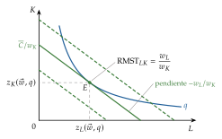
Fuente: elaboración propia a partir de Cahuc, Carcillo y Zylberberg (2014, cap. 3).
Por qué la demanda a largo plazo es más elástica. Supongamos que baja el salario:
con el capital fijo, la empresa se mueve a lo largo de su demanda a corto plazo, la curva del \(\mathrm{VPMg}_L\) para \(\overline{K}\), y contrata más;
con más trabajadores, cada máquina rinde más (\(F_{KL}>0\)), y la empresa compra más capital hasta que \(p\,F_K=w_K\) vuelve a cumplirse;
con más capital, sube la productividad marginal del trabajo y la curva del \(\mathrm{VPMg}_L\) se desplaza a la derecha: se contrata todavía más.
La demanda a largo plazo pasa por los puntos de demandas a corto plazo con capitales distintos, y es más plana: responde más a un mismo cambio del salario (gráfico 16). Es el principio de Le Chatelier que Samuelson (1947) aplica a la economía: cuantas menos restricciones, mayor la respuesta.
Efecto sustitución y efecto escala. Derivando \(z_L(p,\vec{w})=z_L\big(\vec{w},q(p,\vec{w})\big)\) respecto a \(w_L\): \[\frac{\partial z_L(p,\vec{w})}{\partial w_L}=\underbrace{\frac{\partial z_L(\vec{w},q)}{\partial w_L}}_{\text{sustitución}\ (\leq 0)}+\underbrace{\frac{\partial z_L(\vec{w},q)}{\partial q}\cdot\frac{\partial q}{\partial w_L}}_{\text{escala}\ (\leq 0)}\] Por el lema de Shephard, \(\partial z_L(\vec{w},q)/\partial q=\partial\mathrm{CMg}/\partial w_L\), y derivando \(p=\mathrm{CMg}(\vec{w},q)\) respecto a \(w_L\) se obtiene \(\partial q/\partial w_L\). El efecto escala es, por tanto, \[\frac{\partial\mathrm{CMg}}{\partial w_L}\cdot\frac{\partial q}{\partial w_L}=-\frac{\big(\partial\mathrm{CMg}/\partial w_L\big)^2}{\partial\mathrm{CMg}/\partial q}\leq 0\] si el coste marginal es creciente: los 2 efectos tienen el mismo signo, aunque el trabajo sea un factor inferior. Por eso no hay factores Giffen.∎
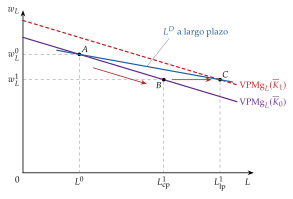
Fuente: elaboración propia a partir de Cahuc, Carcillo y Zylberberg (2014, cap. 3).
B.2. La demanda de trabajo de mercado: las cuasidemandas
Como en la producción no hay efectos renta, agregar las demandas de trabajo no tiene los problemas de la oferta (I.1). Pero la demanda de mercado no es la suma horizontal de las individuales.
Si baja el salario, la industria pasaría de \(A\) a \(B\) sobre la suma de las curvas del \(\mathrm{VPMg}_L\) si cada empresa reaccionara por separado. Pero lo hacen todas a la vez:
todas contratan y producen más, y la oferta de la industria se desplaza a la derecha;
el precio del bien baja, y con él el valor del producto marginal, \(p\cdot F_L\): las curvas del \(\mathrm{VPMg}_L\) se desplazan a la izquierda;
la industria acaba en \(C\), y no en \(B\) (gráfico 17).
Es una externalidad pecuniaria: lo que hace cada empresa cambia el precio al que venden todas.
La demanda de mercado se obtiene sumando las cuasidemandas, las de cada empresa teniendo en cuenta que el precio del bien cambia con el salario. Es menos elástica que la suma de las individuales: al bajar el salario, baja también el precio del bien, y las empresas tienen menos incentivo a contratar. Se suele analizar a corto plazo, porque a largo plazo intervienen además el precio y la productividad del capital.
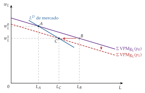
Fuente: elaboración propia a partir de Cahuc, Carcillo y Zylberberg (2014, cap. 3).
B.3. Las reglas de Marshall y Hicks de la demanda derivada
Marshall (1890, lib. V, cap. VI) y Hicks (1932, apéndice) explican de qué depende la elasticidad de una demanda derivada. La demanda de trabajo responde más al salario:
si el trabajo se sustituye con facilidad por capital u otros factores, es decir, si la elasticidad de sustitución, \(\sigma\), es alta [ver tema 3.A.11];
si los compradores del producto final reaccionan mucho a su precio;
si los salarios suponen una parte grande del coste total, aunque solo cuando los compradores del producto reaccionan más de lo que se sustituyen los factores entre sí (la matización de Hicks a «la importancia de no ser importante» de Marshall);
si los demás factores se pueden conseguir en mayor cantidad sin que suba mucho su precio.
Con 2 factores, rendimientos constantes a escala, competencia y una oferta del capital perfectamente elástica, las 3 primeras se resumen en una fórmula (Hamermesh, 1993, cap. 2): \[\varepsilon_{L^D,w_L}=-(1-s_L)\,\sigma-s_L\,|\varepsilon_{q,p}|\] con \(s_L\) la participación del trabajo en los costes y \(|\varepsilon_{q,p}|\) la elasticidad de la demanda del bien. El primer término es el efecto sustitución (con la producción constante) y el segundo, el efecto escala. Un aumento de \(s_L\) hace más elástica la demanda si y solo si \(|\varepsilon_{q,p}|>\sigma\). Con la producción constante queda solo \(-(1-s_L)\,\sigma\), la elasticidad que revisa Hamermesh (1993) (I.2).
C. Anexo: el modelo de Lucas y Rapping con horizonte infinito
i) Supuestos
El individuo vive infinitos periodos, \(t=0,1,2,\dots\)
La utilidad de toda la vida es la suma descontada de las de cada periodo, y en cada periodo consumo y ocio entran por separado: \(\sum_t\beta^t u(C_t,O_t)\), con \(\beta\equiv 1/(1+\rho)\) y \(\rho\) la tasa de descuento.
Cada periodo dura una unidad de tiempo, \(O_t+L_t=1\).
Recibe en cada periodo una renta no laboral \(\overline{W}_t\) y un salario real \(w_t\), conocidos.
Mercado de capitales perfecto: al empezar cada periodo tiene unos activos netos \(b_t\), que rinden el tipo de interés real \(r\), y puede ahorrar o endeudarse sin límite, salvo el de la condición de no-Ponzi.
ii) Desarrollo
Problema: \[\begin{array}{rl}\displaystyle \max_{\{C_t,O_t,b_{t+1}\}_{t=0}^{\infty}} & \displaystyle \sum_{t=0}^{\infty}\beta^{t}\,u(C_t,O_t) \\ \text{s.a.} & C_t+w_t\,O_t+b_{t+1}\leq w_t+(1+r)\,b_t+\overline{W}_t\quad\forall t \\ & \lim_{T\to\infty}\dfrac{b_{T}}{(1+r)^{T}}\geq 0 \\ & b_0\ \text{dado}\end{array}\tag{16}\] La primera restricción dice que el ahorro de cada periodo, \(b_{t+1}-b_t=r\,b_t+\overline{W}_t+w_t\,L_t-C_t\), es lo que queda de las rentas del capital, la no laboral y la del trabajo después de consumir. La renta no laboral del modelo estático, \(\overline{W}\), es aquí \(r\,b_t+\overline{W}_t\).
La segunda es la condición de no-Ponzi: no se puede acabar endeudado en valor presente, es decir, financiar indefinidamente el pago de las deudas con deudas nuevas [ver tema 3.A.29]. En el óptimo se cumple con igualdad (no conviene morir con riqueza sin gastar) y, sumando las restricciones de todos los periodos, se obtiene la restricción presupuestaria intertemporal: \[\sum_{t=0}^{\infty}\frac{C_t+w_t\,O_t}{(1+r)^{t}}=(1+r)\,b_0+\sum_{t=0}^{\infty}\frac{w_t+\overline{W}_t}{(1+r)^{t}}\] el valor presente del gasto en consumo y en ocio iguala la riqueza de toda la vida.
Condiciones de primer orden, con \(\lambda_t\) el multiplicador de la restricción del periodo \(t\) y \(u_C(t)\), \(u_O(t)\) las utilidades marginales del periodo \(t\): \[\beta^{t}u_C(t)=\lambda_t,\qquad \beta^{t}u_O(t)=\lambda_t\,w_t,\qquad \lambda_t=(1+r)\,\lambda_{t+1}\] La última iguala lo que cuesta ahorrar un euro hoy con lo que rinde mañana. Combinándolas se obtienen las 3 condiciones del cuerpo: \[\begin{aligned} \frac{u_O(t)}{u_C(t)}&=w_t &&\text{(intratemporal entre ocio y consumo)}\\ \frac{u_C(t)}{u_C(t+1)}&=\beta\,(1+r) &&\text{(ecuación de Euler del consumo)}\\ \frac{u_O(t)}{u_O(t+1)}&=\beta\,(1+r)\,\frac{w_t}{w_{t+1}} &&\text{(intertemporal del ocio)} \end{aligned}\] Con la utilidad logarítmica de (6), la tercera es (7) para \(t=1,2\).∎
iii) Implicaciones
De la condición intertemporal del ocio, la oferta relativa de trabajo depende del salario relativo, del tipo de interés y de la impaciencia, \[\frac{L_t}{L_{t+1}}=f\Big(\underset{+}{\frac{w_t}{w_{t+1}}},\ \underset{+}{r},\ \underset{-}{\rho}\Big)\] con las mismas 4 implicaciones de la tabla 2. Un aumento permanente del salario o de la renta no laboral deja igual el reparto de las horas entre periodos; cuánto cambian las horas de cada uno depende de cuánto aumente la riqueza, como en el modelo estático.
El vínculo con la elasticidad de Frisch: de \(\lambda_t=(1+r)\lambda_{t+1}\), \(\lambda_t=\lambda_0/(1+r)^t\). Toda la información sobre la vida entera (salarios futuros, riqueza) entra en las horas de cada periodo a través de un solo número, \(\lambda_0\), la utilidad marginal de la riqueza. Un cambio transitorio y pequeño de \(w_t\) apenas mueve \(\lambda_0\), y las horas responden con la elasticidad de Frisch (8), la que mantiene \(\lambda\) constante.
D. Anexo: el mercado de trabajo con poder de mercado
El modelo neoclásico supone que trabajadores y empresas son precio-aceptantes (supuesto 4 de la tabla 1). Este anexo resume qué pasa cuando el poder de mercado está del lado de la empresa (monopsonio en el trabajo, monopolio en el bien) o del de los trabajadores (sindicato). El desarrollo completo, con la tabla de los 4 casos y el monopolio bilateral, está en el [ver tema 3.A.17]; la negociación salarial, en el [ver tema 3.A.27].
D.1. Empresa con poder en el bien y en el trabajo
Cuándo: la empresa tiene poder de monopsonio si es la única que contrata en su zona, si está muy especializada o si las empresas negocian juntas a través de una patronal; también, con fricciones, si al bajar el salario no pierde a todos sus trabajadores (Manning, 2003). Y puede tener a la vez poder de monopolio en el bien que vende: como la demanda de trabajo es derivada, lo que pasa en el mercado del bien se traslada al de trabajo.
Problema a corto plazo, con demanda inversa del bien \(p(q)\) y oferta inversa de trabajo \(w_L(L)\): \[\begin{array}{rl}\displaystyle \max_{L} & \displaystyle B(L)=p(q)\,q-w_L(L)\,L-w_K\,\overline{K} \\ \text{s.a.} & q=F(L,\overline{K}) \\ & L\geq 0\end{array}\]
Condición de primer orden: el ingreso del producto marginal iguala el gasto marginal del trabajo, \[\underbrace{\big[p+p'(q)\,q\big]\,F_L}_{\mathrm{IPMg}_L}=\underbrace{w_L(L)+w_L'(L)\,L}_{\mathrm{GMg}_L}\ \Longleftrightarrow\ p\,F_L\Big(1-\frac{1}{|\varepsilon_{q,p}|}\Big)=w_L(L)\Big(1+\frac{1}{\varepsilon_{L,w_L}}\Big)\tag{18}\]
el \(\mathrm{IPMg}_L\) queda por debajo del \(\mathrm{VPMg}_L\), porque vender más baja el precio de todas las unidades;
el \(\mathrm{GMg}_L\) queda por encima de la oferta, porque contratar un trabajador más obliga a subir el salario de todos: su coste es su salario más esa subida. El \(\mathrm{GMg}_L\) no es la curva de oferta;
el salario lo da siempre la oferta para la cantidad contratada, \(w=w_L(L)\). Con monopsonio no hay curva de demanda de trabajo: la empresa no toma el salario como dado, sino que elige un punto de la oferta.
Los 4 casos (desarrollados en el [ver tema 3.A.17]): con competencia en los 2 mercados, \(\mathrm{VPMg}_L=w_L\) (\(|\varepsilon_{q,p}|\to\infty\) y \(\varepsilon_{L,w_L}\to\infty\)); con monopolio solo en el bien, \(\mathrm{IPMg}_L=w_L\); con monopsonio solo en el trabajo, \(\mathrm{VPMg}_L=\mathrm{GMg}_L\) (5), y con los 2, \(\mathrm{IPMg}_L=\mathrm{GMg}_L\). El empleo y el salario son máximos en el primero y mínimos en el último, con los otros 2 en medio (gráfico 18).
En ninguno de los 4 hay paro involuntario: la empresa contrata sobre la curva de oferta, y al salario que paga trabajan todos los que quieren hacerlo a ese salario. Lo que hay es explotación en el sentido de Robinson (1933): el trabajador cobra menos de lo que aporta en el margen.
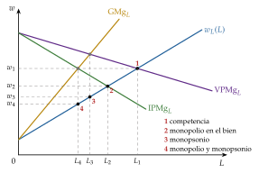
Fuente: elaboración propia a partir de Robinson (1933).
D.2. Salario mínimo con monopsonio
Un salario mínimo \(\underline{w}\) hace horizontales la oferta y el gasto marginal hasta \(w_L^{-1}(\underline{w})\), el número de trabajadores dispuestos a trabajar a ese salario: hasta ahí, la empresa paga \(\underline{w}\) a todos y contratar uno más ya no sube el salario de los demás. Por tramos (gráfico 9):
si \(\underline{w}\leq w^M\), no afecta: la empresa ya pagaba más;
si \(w^M<\underline{w}\leq w^c\), la empresa se comporta como precio-aceptante hasta la oferta, y el empleo sube con el salario mínimo, hasta su máximo en \(\underline{w}=w^c\), el empleo competitivo;
si \(\underline{w}>w^c\), el empleo lo decide el \(\mathrm{VPMg}_L\) y baja, y hay paro involuntario: al salario mínimo quieren trabajar más personas de las que se contratan. Aun así, el empleo supera el de monopsonio mientras \(\underline{w}\) no pase de \(\mathrm{VPMg}_L(L^M)\).
Es el resultado que permite leer el estudio de Card y Krueger (1994) (I.4).
D.3. Sindicato monopolista
Cuándo: el poder está del lado de los trabajadores si están muy especializados o si se agrupan en un sindicato que negocia por todos. Es el sindicato monopolista de Dunlop (1944).
Supuestos: frente a empresas precio-aceptantes, cuya demanda de trabajo es \(w^D(L)=\mathrm{VPMg}_L\), el sindicato fija el salario y las empresas eligen el empleo sobre su demanda. Maximiza la renta de sus miembros neta de lo que les cuesta trabajar, \[U_S=w\,L-v(L)\] con \(v(L)\) la desutilidad agregada del trabajo y \(v'(L)=w_L(L)\): la oferta mide el salario de reserva del último trabajador.
Desarrollo: eligiendo el punto de la demanda, \[\max_{L}\ U_S=w^D(L)\,L-v(L)\ \Longrightarrow\ \underbrace{w^D(L)+w^{D\prime}(L)\,L}_{\mathrm{IMg}_S}=v'(L)\ \Longleftrightarrow\ w^D(L)\Big(1-\frac{1}{|\varepsilon_{L^D,w}|}\Big)=w_L(L)\] con \(\varepsilon_{L^D,w}<0\) la elasticidad de la demanda de trabajo. El ingreso marginal del sindicato, \(\mathrm{IMg}_S\), queda por debajo de la demanda, porque ofrecer más trabajo baja el salario de todos.
Implicaciones (gráfico 19): el empleo \(L^S\) (aquí, el que fija el sindicato) es menor que el competitivo, y el salario \(w^S=w^D(L^S)\), mayor que \(w^c\). Al salario \(w^S\) hay más gente dispuesta a trabajar, \(w_L^{-1}(w^S)\), que puestos: aquí sí hay paro involuntario, porque el salario está por encima de la oferta.
Monopolio bilateral: si el sindicato se enfrenta a un empleador monopsonista, el salario queda indeterminado entre \(w^M\) y \(w^S\) (Bowley, 1928). Un salario negociado entre \(w^M\) y \(w^c\) aumenta el empleo respecto al monopsonio, como el salario mínimo, y si se negocian juntos salario y empleo, se llega al empleo competitivo y el poder de negociación solo reparte el excedente [ver tema 3.A.17] [ver tema 3.A.27].
En resumen, el poder de mercado de un solo lado reduce el empleo; solo el de los trabajadores, al fijar el salario por encima de la oferta, crea paro involuntario.
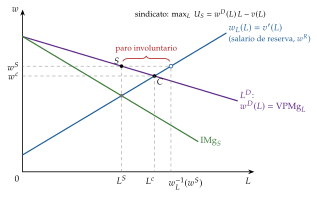
Fuente: elaboración propia a partir de Dunlop (1944) y Cahuc, Carcillo y Zylberberg (2014, cap. 7).
E. Anexo: la acumulación de capital humano a lo largo de la vida (Ben-Porath, 1967) y la función de ingresos
a) Idea
b) Modelo
i) Supuestos
El individuo vive y puede trabajar hasta \(T\). Hay un mercado de capitales perfecto al tipo \(r\), así que, por la separación de Fisher, le basta con maximizar el valor presente de su renta (III.2).
Empieza con un capital humano \(h_0\). En cada momento dedica a formarse una fracción \(1-u(t)\) de su tiempo, y a trabajar el resto, \(u(t)\). El capital humano crece con ese tiempo y con lo que ya se sabe: \[\dot h(t)=a\,\big[1-u(t)\big]\,h(t),\qquad a>0\tag{19}\] con \(a\) la aptitud para aprender: la tasa de crecimiento del capital humano, \(\dot h/h=a\,(1-u)\), es proporcional a ella. Es la misma ecuación que el sector educativo del modelo de Uzawa y Lucas [ver tema 3.A.44].
Gana un salario \(\omega\) por unidad de capital humano y de tiempo trabajado, \(\omega\,u(t)\,h(t)\). Formarse no tiene coste directo: su coste es el salario al que se renuncia.
ii) Desarrollo
Problema: \[\begin{array}{rl}\displaystyle \max_{u(t)} & \displaystyle \int_{0}^{T}e^{-rt}\,\omega\,u(t)\,h(t)\,dt \\ \text{s.a.} & \dot h(t)=a\,\big[1-u(t)\big]\,h(t) \\ & h(0)=h_0,\ 0\leq u(t)\leq 1\end{array}\]
Con el hamiltoniano en valor presente y \(\mu(t)\) el valor (descontado) de una unidad más de capital humano, \[H=e^{-rt}\,\omega\,u\,h+\mu\,a\,(1-u)\,h,\qquad \frac{\partial H}{\partial u}=h\,\big[e^{-rt}\,\omega-a\,\mu\big]\] \(H\) es lineal en \(u\), así que la solución es de esquina: se trabaja a tiempo completo (\(u=1\)) si una hora de trabajo, que paga \(\omega h\), vale más que una de estudio, que añade \(a\,h\) unidades de capital humano de valor \(\mu\) cada una; y se estudia a tiempo completo (\(u=0\)) en caso contrario.
El valor del capital humano cae con la edad. En la fase de trabajo, \(\dot\mu=-\partial H/\partial h=-e^{-rt}\,\omega\), y con \(\mu(T)=0\) (al final de la vida, saber más no vale nada): \[\mu(t)=\frac{\omega}{r}\big(e^{-rt}-e^{-rT}\big)\] el valor presente del salario de una unidad de capital humano durante los años que quedan. Cuanto más tarde, menos años para cobrar lo aprendido.
Especialización: como \(\mu(t)\,e^{rt}\) decrece, el individuo estudia a tiempo completo primero (\(u=0\) hasta \(S\)) y después trabaja a tiempo completo hasta \(T\), sin volver a estudiar. El momento de dejar de estudiar iguala el valor de una hora de estudio con el salario que se deja de ganar, \(a\,\mu(S)=e^{-rS}\omega\): \[a\big(e^{-rS^*}-e^{-rT}\big)=r\,e^{-rS^*}\ \Longrightarrow\ S^*=T+\frac{1}{r}\ln\Big(1-\frac{r}{a}\Big),\qquad a>r\tag{20}\] ∎
iii) Implicaciones
Se estudia más cuanto mayor es la aptitud, \(a\), y cuanto más larga es la vida laboral, \(T\), y menos cuanto mayor es el tipo de interés, \(r\). Solo se estudia si estudiar rinde más que el mercado de capitales, \(a>r\). Es la intuición de Becker (III.2): se invierte en formarse al principio de la vida, porque quedan más años para cobrar el rendimiento y el salario al que se renuncia es menor.
Los años de estudio en la ecuación de Mincer. Al acabar de estudiar, \(h(S)=h_0\,e^{aS}\), y el salario es \(\omega\,h_0\,e^{aS}\): \[\ln w(S)=\ln(\omega\,h_0)+a\,S\] El coeficiente de los años de estudio, \(\beta_1\), es \(a\), el rendimiento de un año de estudio. Con una vida laboral muy larga (\(T\to\infty\)), la condición (20) se reduce a \(a=r\): si estudiar rindiera más que el tipo de interés, convendría seguir estudiando, y si rindiera menos, no estudiar. Por eso, en el margen, \(\beta_1\approx r\), como en (10).
c) Extensiones: la experiencia y el término cuadrático
Con rendimientos decrecientes en la producción de capital humano, como en el modelo original de Ben-Porath (1967), la solución deja de ser «todo o nada»: tras la fase de especialización, se sigue dedicando a formarse en el empleo una fracción del tiempo que cae poco a poco hasta anularse al final de la vida laboral (gráfico 20).
Mincer (1974) aproxima esa caída con una recta. Llamamos \(X\) a los años de experiencia, contados desde que se deja de estudiar, y, en esta parte, \(T\) a los años de vida laboral. La fracción del tiempo que se dedica a formarse es \[k(X)=k_0\Big(1-\frac{X}{T}\Big),\qquad 0<k_0<1\]
Ingresos potenciales: lo que se ganaría trabajando todo el tiempo, \(E(X)=\omega\,h(X)\). Como \(\dot h/h=a\,k(X)\), \[\ln E(X)=\ln E(0)+a\int_{0}^{X}k(\tau)\,d\tau=\ln E(0)+a\,k_0\,X-\frac{a\,k_0}{2T}\,X^2\] con \(\ln E(0)=\ln(\omega\,h_0)+a\,S\).
Ingresos observados: se cobra solo por el tiempo que se trabaja, \(w(X)=E(X)\,\big[1-k(X)\big]\). Como \(\ln(1-k)\approx -k\) si \(k\) es pequeño, \[\ln w(X)\approx\ln E(X)-k(X)=\underbrace{\ln(\omega\,h_0)-k_0}_{\beta_0}+\underbrace{a}_{\beta_1}\,S+\underbrace{k_0\Big(a+\frac{1}{T}\Big)}_{\beta_2>0}\,X\ \underbrace{-\ \frac{a\,k_0}{2T}}_{\beta_3<0}\,X^2\] que es la ecuación de Mincer (11), con \(\beta_1=a\approx r\), \(\beta_2>0\) y \(\beta_3<0\).∎
Lectura: el salario observado crece con la experiencia por 2 razones, porque el capital humano sigue aumentando y porque cada vez se dedica menos tiempo a formarse y más a cobrar, y crece cada vez más despacio, porque se invierte cada vez menos.
Depreciación: sin ella, el máximo del perfil, \(X=-\beta_2/(2\beta_3)=T+1/a\), queda más allá del final de la vida laboral. Si el capital humano se deprecia a una tasa \(\delta\) (\(\dot h/h=a\,k-\delta\)), \(\beta_2=k_0(a+1/T)-\delta\), \(\beta_3\) no cambia y el máximo se adelanta a \(T+1/a-\delta\,T/(a\,k_0)\), antes de la jubilación si \(\delta>k_0/T\): el salario puede llegar a caer al final de la carrera.
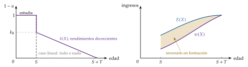
Fuente: elaboración propia a partir de Ben-Porath (1967), Mincer (1974, caps. 1-2) y Cahuc, Carcillo y Zylberberg (2014, cap. 4).
F. Anexo: aspectos para el test y preguntas del tribunal
Preguntas tipo test del primer ejercicio: simulador de test.
Salario de reserva: \(w^R=U_O/U_C\) en el punto de dotación \((\overline{W},O_0)\); si el ocio es normal, sube con la renta no laboral. Con \(U=C^{\alpha}O^{1-\alpha}\), \(L=\alpha\,O_0-(1-\alpha)\,\overline{W}/w\) y \(w^R=(1-\alpha)\,\overline{W}/(\alpha\,O_0)\); sin renta no laboral, \(L=\alpha\,O_0\) no depende del salario: los efectos sustitución y renta se compensan.
Efectos de una subida del salario: sustitución (más horas), renta ordinario (más horas si el ocio es normal) y renta dotación (menos horas); el efecto total es ambiguo. Una prima por horas extraordinarias, en cambio, aumenta las horas sin ambigüedad.
Elasticidades de la oferta: si el ocio es normal, la de Frisch es mayor o igual que la hicksiana y esta, mayor o igual que la marshalliana. Con \(u=\ln C-\chi\,L^{1+\varphi}/(1+\varphi)\), la de Frisch es \(1/\varphi\).
Demanda de trabajo: a corto plazo, \(\mathrm{VPMg}_L=w_L\) y la condición de segundo orden es \(F_{LL}<0\), sin condición sobre los rendimientos a escala; a largo plazo es más elástica (Le Chatelier); la de mercado es menos elástica que la suma de las individuales (cuasidemandas); no hay factores Giffen.
Monopsonio con oferta lineal \(w_L=c_0+c_1L\): \(\mathrm{GMg}_L=c_0+2c_1L\) (misma ordenada en el origen y doble pendiente). Sin paro involuntario; un salario mínimo entre \(w^M\) y \(w^c\) aumenta el empleo. Con sindicato monopolista sí hay paro involuntario.
Lucas y Rapping: un aumento transitorio del salario sube las horas de hoy y baja las de mañana; uno permanente no cambia la oferta relativa; un aumento del tipo de interés sube las horas de hoy; más impaciencia las baja.
Becker: la formación general la paga el trabajador (salario menor mientras se forma); la específica se reparte entre trabajador y empresa.
Mincer: \(\beta_1\) es una semielasticidad (el aumento exacto es \(e^{\beta_1}-1\), casi \(\beta_1\) si es pequeño); \(\beta_1\approx r\) sin costes directos; el perfil es cóncavo, con máximo en \(X=-\beta_2/(2\beta_3)\). El sesgo de habilidad sobreestima \(\beta_1\) y el error de medida lo subestima.
Oaxaca-Blinder: la parte explicada valora las diferencias de características con los coeficientes de un grupo; la no explicada, las diferencias de coeficientes, y su tamaño depende del grupo que se tome de referencia.
Fechas: Marshall (1890), Robbins (1930), Hicks (1932), Robinson (1933), Keynes (1936), Mincer (1958 y 1974), Schultz (1961), Becker (1962, 1964 y 1965), Ben-Porath (1967), Lucas y Rapping (1969), Oaxaca (1973), Blinder (1973), Spence (1973), Gronau (1977), MaCurdy (1981), Kydland y Prescott (1982), Angrist y Krueger (1991), Chiappori (1992), Card y Krueger (1994), Goldin (1995). Premios Nobel: Frisch y Tinbergen (1969), Becker (1992), Card, Angrist e Imbens (2021), Goldin (2023).
Preguntas de otros exámenes
La literatura usa a menudo consumo y trabajo como argumentos de la utilidad, en lugar del ocio. ¿Podría dibujar las curvas de indiferencia en ese caso? En el plano \((L,C)\), el trabajo es un «mal»: las curvas de indiferencia son crecientes, con pendiente \(U_O/U_C\), y convexas (se hacen más empinadas a medida que se trabaja más, porque cada hora de ocio que se pierde vale más). La utilidad aumenta hacia arriba y a la izquierda, y la recta de balance, \(C=w\,L+\overline{W}\), es creciente, con pendiente \(w\).
¿Qué relación tiene el modelo intertemporal de Lucas con la elasticidad de sustitución del trabajo (no del consumo)? Lo que decide cuánto se mueven las horas en el modelo es la elasticidad de sustitución intertemporal del trabajo, que es la elasticidad de Frisch (\(1/\varphi\) en (8)); es distinta de la elasticidad de sustitución intertemporal del consumo, que decide la pendiente de la senda de consumo en la ecuación de Euler [ver tema 3.A.29].
¿Qué efectos tiene en \(w^*\) y en \(L^*\) la existencia de un monopolio en el mercado de bienes? El ingreso del producto marginal queda por debajo del valor del producto marginal: la empresa contrata menos y, si la oferta de trabajo es creciente, paga menos. No hay paro involuntario (anexo D).
En el marco del tema, ¿por qué los inmigrantes mexicanos legales votaron a Trump? Es la pregunta de cómo afecta la inmigración a los salarios de los ya residentes. Si los nuevos inmigrantes son sustitutivos cercanos de los que ya están (mismas cualificaciones), aumenta la oferta en su segmento del mercado y su salario baja; los trabajadores con cualificaciones complementarias, en cambio, ganan. Card (1990) apenas encuentra efectos en Miami tras el éxodo del Mariel; Borjas (2017) sí los encuentra para los menos cualificados (I.2).
Preguntas probables del tribunal
¿Hay paro involuntario en el modelo neoclásico? ¿Y con monopsonio? ¿Y con un sindicato?
¿Por qué la oferta de trabajo individual puede volverse hacia atrás? ¿Puede hacerlo la agregada?
¿Qué diferencia la elasticidad de Frisch de la hicksiana? ¿Cuál necesitan los modelos de ciclo real?
¿Por qué un aumento transitorio del salario mueve más las horas que uno permanente?
¿Quién paga la formación general y quién la específica? ¿Por qué las empresas alemanas pagan formación general?
¿Es \(\beta_1\) una tasa de rendimiento? ¿Cómo se distingue en los datos la teoría de Becker de la señal de Spence?
¿Por qué las estimaciones con variables instrumentales salen iguales o mayores que las de MCO?
Bibliografía
\(O_0\) es la dotación de tiempo \(T\) del modelo de asignación del tiempo de Becker (1965) [ver tema 3.A.8], y \(L\), su tiempo de trabajo.↩︎
Derivando (3) respecto a \(\overline{W}\), \(\partial w^R/\partial\overline{W}=(U_{OC}U_C-U_OU_{CC})/U_C^2\), que es positiva si y solo si el ocio es normal en el punto de dotación (Cahuc, Carcillo y Zylberberg, 2014, cap. 1).↩︎
\(h_O(w,\overline{U})\) es la demanda compensada (hicksiana) de ocio, con la notación \(h\) de la teoría de la dualidad [ver tema 3.A.9]; la \(h\) sin subíndice del bloque III es el capital humano.↩︎
Con una prima por horas extraordinarias, en cambio, la oferta aumenta sin ambigüedad. La prima solo paga más las horas que superan la jornada normal, así que apenas enriquece al individuo por las horas que ya trabajaba: queda casi solo el efecto sustitución. Una subida del salario, en cambio, paga más todas las horas. La recta de balance se quiebra en la jornada normal, \(L_n\) (las horas que ya se trabajaban), y a su izquierda paga el salario con prima, \(w_e>w\): es más inclinada.
↩︎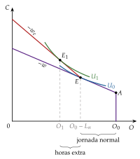
Hay otra explicación posible para un tramo bajo poco sensible o decreciente: las prestaciones condicionadas a la renta. Si una subida del salario hace perder un subsidio, a quien está cerca del umbral le conviene no superarlo trabajando más [ver tema 4.B.10].↩︎
La oferta de los segundos perceptores del hogar es más elástica que la del perceptor principal (Keane, 2011). Con las reformas fiscales británicas, la elasticidad salarial de las mujeres pasa de 0,14 sin hijos a 0,21 con el menor de 0-2 años y a 0,37 con el menor de 3-4 años (Blundell, Duncan y Meghir, 1998): es mayor cuando hay hijos en edad preescolar, que es cuando más pesa el coste de cuidarlos.↩︎
La función de producción con elasticidad de sustitución constante (CES) es la más usada para estimarla [ver tema 3.A.11].↩︎
Según la OIT, «las personas en desocupación, o personas desocupadas, se definen como todas aquellas personas en edad de trabajar que no estaban ocupadas, que habían llevado a cabo actividades de búsqueda de un puesto de trabajo durante un período reciente especificado, y que estaban actualmente disponibles para ocupar un puesto de trabajo en caso de que existiera la oportunidad de hacerlo» (Organización Internacional del Trabajo, 2013, § 47).↩︎
En general, las preferencias serían \(U(C_1,\dots,C_T,L_1,\dots,L_T)\), pero esa forma no da resultados sencillos de interpretar. La separabilidad en el tiempo es restrictiva: no admite hábitos de consumo (el consumo pasado entraría en la utilidad de hoy) ni decisiones de formación, que crearían una disyuntiva entre ocio, trabajo y estudio (bloque III).↩︎
La condición intratemporal se cumple en cada periodo porque la utilidad es separable; con hábitos o con una utilidad no separable entre periodos deja de cumplirse (Cahuc, Carcillo y Zylberberg, 2014, cap. 1).↩︎
De las condiciones intratemporales, \(C_t=w_t(1-L_t)/b\), y de las del ocio, \(1-L_1=b/(\lambda w_1)\) y \(1-L_2=b\beta(1+r)/(\lambda w_2)\). Llevándolas a la restricción, \((1+\beta)(1+b)/\lambda=w_1+w_2/(1+r)\), de donde sale la expresión.↩︎
Ragnar Frisch recibió en 1969, con Jan Tinbergen, el primer Premio Nobel de Economía, «por desarrollar y aplicar modelos dinámicos para el análisis de los procesos económicos» (Nobel Prize Outreach, 1969).↩︎
El nombre viene de Frisch (1959), que define las demandas con la utilidad marginal de la renta constante; MaCurdy (1981) la lleva a la oferta de trabajo del ciclo vital. No tiene que ver con la actitud ante el riesgo: el modelo es sin incertidumbre.↩︎
Marshall (1890) ya afirmó que «el capital más valioso de todos es el que se ha invertido en seres humanos».↩︎
Según Becker, «la motivación fundamental ha sido probablemente el reconocimiento de que el crecimiento del capital físico, al menos tal como se mide convencionalmente, explica solo una parte relativamente pequeña del crecimiento de la renta de la mayoría de los países» (Becker, 1964). Becker recibió el Premio Nobel de Economía en 1992 por extender el análisis microeconómico a una amplia gama de comportamientos humanos, también fuera del mercado (Nobel Prize Outreach, 1992).↩︎
Spence (1973) estudia la selección adversa en el mercado de trabajo; supone que la educación no aumenta la productividad para aislar el papel de la señal.↩︎
Con una constante en la regresión, la media del logaritmo del salario de cada grupo es \(\overline{\ln w}=\bar{\vec{x}}\cdot\hat{\vec{\beta}}\). Basta restar las 2 medias y sumar y restar \(\bar{\vec{x}}_{\mathrm{B}}\cdot\hat{\vec{\beta}}_{\mathrm{A}}\).↩︎
El método de los gemelos tiene su propio problema: si son idénticos, ¿por qué estudian distinto? Si la diferencia se debe a algo que también influye en sus ingresos (preguntados, algunos responden que uno era «mejor con los libros»), el rendimiento estimado sigue sesgado (Borjas, 2020, cap. 6).↩︎
Con instrumentos que apenas mueven los años de estudio, como el trimestre de nacimiento, la estimación tiende hacia la de MCO y puede estar tan sesgada como ella (Bound, Jaeger y Baker, 1995).↩︎
A diferencia del corto plazo, en el que la condición de primer orden ya es la demanda de trabajo, a largo plazo cada condición depende de la cantidad del otro factor, que también se elige: la demanda de trabajo depende además de la productividad y del precio del capital.↩︎
En la maximización del beneficio la tecnología entra en la función objetivo, que tiene que ser cóncava; en la minimización del coste basta con que \(F\) sea cuasicóncava, porque allí la tecnología es una restricción y lo que importa es la forma de las isocuantas [ver tema 3.A.12].↩︎